Camisetas clásicas: nombres explosivos
Wed, 15 Feb 2012 15:03:27 +0000
Una de las cuestiones más importantes cuando se adquiere una camiseta de fútbol es decidir si ponerle o no un nombre en la espalda. Somos muchos los que giramos la cabeza al cruzarnos para observar si ese señor que pasa ocupando media vía, que lleva con orgullo la zamarra de su club -porque a ojos [...]
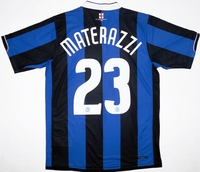Una de las cuestiones más importantes cuando se adquiere una camiseta de fútbol es decidir si ponerle o no un nombre en la espalda. Somos muchos los que giramos la cabeza al cruzarnos para observar si ese señor que pasa ocupando media vía, que lleva con orgullo la zamarra de su club -porque a ojos del mundo, si llevas una camiseta de fútbol te conviertes directamente en hincha de ese equipo- para observar nombre y dorsal, con la posterior decepción si el señor en cuestión ha decidido no incluir a su ídolo en su vestimenta o bien se ha estampado números inventados y un apodo que pretende ser gracioso. Hay quién no luce nombre porque ha dimitido de la decisión, que es sinceramente muy complicada. Cuando visité el Emirates Stadium en 2008 me moría de ganas de comprarme una camiseta de Cesc Fábregas, con el 4, pero los rumores de traspaso inminente me lo desaconsejaron. En cambio, el pasado mayo por fin me decidí a pedir la de Mikel Arteta, con el 8 del Everton. Bien, gracias a Cesc, que finalmente decidió irse de Londres, y a Wenger, que tiene buen gusto, su validez duró apenas dos meses.
De la mano de Classic Football Shirts, la tienda especializada en camisetas antiguas, nos acercamos al fútbol con una perspectiva diferente, desde los uniformes con los que se ha construído la historia del deporte rey.
Más allá de estos desencuentros, de lo que queremos hablar hoy es de nombres. Exclusivamente de nombres. Los separaremos completamente del futbolista al que representan. Nombres potentes, nombres explosivos, nombres que da gusto pronunciar, nombres que alguna vez hemos pensando poner a nuestros hijos y lo hemos sugerido a tono de chiste, a ver si cuela. ¿Hay algún Zlatan nacido en Barcelona?
Además hay cierta influencia temporal en todo ello. Si en 1999 paseabas por Barcelona con tu elástica azulgrana y detrás, ‘REIZIGER’, seguramente levantabas algún comentario negativo. Si lo haces en la actualidad seguro que fabricas alguna sonrisa, porque además del personaje, Michael John Reiziger, tiene un nombre completo fantástico. Mismo caso el de un compañero suyo: Boudewijn Zenden, el extremo que nunca aprendió a centrar.
Nos hemos dado una vuelta por el catálogo de Classic Football Shirts, sección names&numbers, y la verdad es que hay auténticas perlas. Jugó en el Tottenham a mediados de los noventa Ilie Dumitrescu. Un clásico como David Ginola lo hizo en el Newcastle. Absolutamente inmejorable llamarse Demetrio Albertini. Azulgrana Rivaldo Vitor Borba Ferreira. También lo fue, aunque no destacó mucho en la ciudad condal, Ronald de Boer, con un nombre más explosivo que el de su hermano gemelo. Gianni Comandini vistió una temporada la camiseta del Vicenza, marcó 20 goles y lo fichó el Milan. El rojo y blanco de Olympiacos se identifica con Pedrag Djordjevic. Jugó en Portsmouth un hombre de apellido capital, el defensa Justin Edinburgh.
Rui Manuel Cesar Costa, despuntó en el Benfica, club al que también visitó el esloveno Zlatko Zahovic. Nunca nos olvidaremos de Pierre van Hooijdonk, y mucho menos de Tore André Flo. Hay mucho milanista en la lista, pero no podemos prescindir de Gennaro Gattuso. Uno de los más románticos, Juan Román Riquelme. El compañero Borja Barba destacó en su último post camisetil a otro mito, Gianfranco Zola. Acabamos a la carrera: Patrick Stephan Kluivert, Álvaro Recoba, Giampaolo Pazzini, Zlatan Ibrahimovic, Landon Donovan y el más explosivo de todos, Marco Materazzi.
Puedes comprar estas camisetas, y cientos más, en Classic Football Shirts.
Leverkusen en el nuevo escenario barcelonista
Tue, 14 Feb 2012 18:24:09 +0000
Leverkusen recibe al FC Barcelona, en la ida de los octavos de final de la UEFA Champions League, solo tres días después de que el Reyno de Navarra y el CA Osasuna alterasen considerablemente el escenario de la temporada azulgrana en lo que respecta al campeonato nacional de Liga. La derrota sufrida ante los navarros, [...]
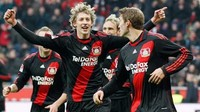
Leverkusen recibe al FC Barcelona, en la ida de los octavos de final de la UEFA Champions League, solo tres días después de que el Reyno de Navarra y el CA Osasuna alterasen considerablemente el escenario de la temporada azulgrana en lo que respecta al campeonato nacional de Liga. La derrota sufrida ante los navarros, con varios jugadores clave fuera del once, conlleva una doble lectura. Por un lado, y ya simplemente por el hecho de haber reservado a futbolistas como Iniesta, Xavi o Fàbregas, da a entender que el gran objetivo barcelonista de la temporada no es otro que la competición europea. Por otro, esa presunción queda convertida prácticamente en certeza al comprobar que la derrota en Navarra dejó a los de Guardiola a diez puntos del líder liguero. Una distancia ya considerable y que incita a centrar los esfuerzos y las atenciones en el resto de los objetivos marcados al comienzo de la campaña.
Cada semana, y de la mano de bwin.com, os ofreceremos los partidos más interesantes del fútbol mundial, con especial atención a todos aquellos que os manejáis en el mundo de las apuestas on-line.
Cuando al Leverkusen le cayó en gracia la bola caliente del sorteo del pasado mes de diciembre, todo fueron palabras bonitas hacia la fortuna, o infortunio, que suponía el medirse con el actual campeón. Honor, orgullo, excelente oportunidad para demostrar a toda Europa quiénes somos… Pero la procesión deambulaba por dentro. Tras haber superado un grupo durísimo y con una segunda plaza muy igualada sobre el papel, con Chelsea, Valencia y Genk, gracias a un gol del central Manuel Friedrich merced a un córner en los minutos de añadido del último partido ante el Chelsea, a buen seguro esperaba el club alemán mejor suerte con el sorteo de la siguiente ronda eliminatoria.
Pero medirse al Barça, al equipo que todos temían y ninguno quería enfrente, conlleva un punto de tranquilidad y de exigencia rebajada. Al fin y al cabo, prácticamente nadie espera que el conjunto dirigido por Robin Dutt pueda siquiera plantarle cara al poderoso equipo azulgrana. En zona media-alta de la tabla de la Bundesliga, y ya con los puestos que dan derecho a entrar en la próxima edición de la máxima competición europea a una distancia inasumible, el club de la Bayer presenta una plantilla joven e inexperta, a excepción de figuras como las del capitán Simon Rolfes, el central Manuel Friedrich o el delantero Stefan Kießling, todos ellos internacionales con la Mannschaft, y, especialmente, Michael Ballack, el jugador totémico que, a sus 35 años, sigue dando guerra en el equipo que le catapultó a la fama hace ya una década pero que no podrá alinearse contra el FC Barcelona por culpa de una inoportuna lesión.
Pero no será Ballack la única baja de los alemanes. Sin Eren Derdiyok, máximo goleador del club de la aspirina, ni Sidney Sam, veloz extremo y probablemente el jugador más resolutivo de los de Dutt, el potencial, especialmente el ofensivo, de los alemanes baja considerablemente. Quizá por eso, porque todos los factores parecen jugar en contra de sus posibilidades, por las bajas que presenta, por enfrentarse a un Barça herido y que recupera su mejor alineación tras el tropezón de Pamplona, por alinear a un equipo joven e inexperto en partidos de este nivel, el Leverkusen llega a la cita de hoy sin mucho que perder y todo por ganar. Cuesta pensar en un nuevo varapalo culé. Las circunstancias invitan a pensar en que la eliminatoria será poco menos que de puro trámite para los de Guardiola. Sin embargo, algo tiene esta competición (y así se ha demostrado ya en la edición de este mismo año), el súmmum del nivel competitivo, que guarda una especial querencia por las anomalías.
Las cuotas de apuestas en Bwin apenas otorgan confianza a la sorpresa alemana. La victoria del Leverkusen se paga, atención, a 8.50 euros, por 5 euros del empate y 1.33 de la victoria azulgrana. ¿Tiene sentido apostar por un resultado que no sea la victoria barcelonista en un partido en el que parece tenerlo, como hemos visto, todo de cara? Quizá el riesgo invita más a pensar en un escenario en el que el Barça se adueñe de la pelota (Xavi, Iniesta) y percuta con insistencia por el interior (Fàbregas) o desde el exterior (Messi, Alexis) en busca de la portería del joven Leno. En ese caso, se antoja plausible una victoria azulgrana con varios goles. Dos goles azulgranas se pagarían a 3.40, y si fueran tres o más, a 2.30 euros. Si el Leverkusen lograse hacer buena su fortaleza áerea (Friedrich, Rolfes, Kießling y Ćorluka superan el metro noventa) en el apartado ofensivo, no es descabellado pensar en algún gol alemán. Un gol local, a 2.50. Merece la pena arriesgar.
El Barça se congela en Pamplona
Sun, 12 Feb 2012 07:15:35 +0000
¿Es posible que un equipo de fútbol muera de éxito? Muchos consideran que fue, de alguna manera, la manera en la que el Dream Team de Cruyff pasó a mejor vida. El técnico holandés, alentado por una autoconfianza imparable, creyó que su idea era tan excelsa, tan única, tan perfecta y tan infalible que acabó [...]
¿Es posible que un equipo de fútbol muera de éxito? Muchos consideran que fue, de alguna manera, la manera en la que el Dream Team de Cruyff pasó a mejor vida. El técnico holandés, alentado por una autoconfianza imparable, creyó que su idea era tan excelsa, tan única, tan perfecta y tan infalible que acabó pensando que, bajo su sistema, Igor Korneiev podría pasar por Stoitchkov, José Mari por Guillermo Amor y Xabi Eskurza por Beguiristain. Colocó al futbolista varios peldaños por debajo, en importancia, del sistema. Y fue el principio de su fin. Hoy Guardiola hizo jugar en el Reyno de Navarra a Sergi Roberto, Cuenca, Tello o Thiago. Iniesta y Xavi no se quitaron el chándal y Fàbregas lo hizo solo cuando la amenaza de derrota era ya demasiado contundente. No quiero establecer un paralelismo tosco, grosero y desafortunado con el ocaso del Dream Team (ni las circunstancias son las mismas ni los Cuenca, Thiago o Sergi Roberto tienen nada que ver con los Korneiev, Eskurza o José Mari, por fortuna para el barcelonismo), pero, pese a que la derrota azulgrana en Pamplona (3-2) fue más causa de una intensidad por debajo de la que Osasuna exigía (particularmente sangrante en el caso del desdibujado Piqué) que de los nombres que Pep dispuso sobre el tablero, mire usted, he tenido un fresco pero inoportuno déjà-vu. Quizá, tal vez, puede ser que Pep, con su atípico once en el Reyno, en una de las citas ligueras históricamente más complicadas para el Barça, diera a entender a los suyos que la intensidad requerida para obtener fruto de su viaje a Navarra iba a ser mucho menor de la que muchos presuponían. Un riesgo excesivo.
Todos los partidos de Harry
Sat, 11 Feb 2012 00:35:14 +0000
Este fin de semana hay grandes partidos en Inglaterra, pero sólo uno se disputará en todas los estadios al mismo tiempo. La FA busca seleccionador. O lo que resulta idéntico en este caso: quiere convencer al que ya ha elegido. El rostro del este londinense, Harry Redknapp, es hoy la imagen en común de todas [...]
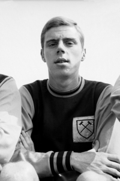Este fin de semana hay grandes partidos en Inglaterra, pero sólo uno se disputará en todas los estadios al mismo tiempo. La FA busca seleccionador. O lo que resulta idéntico en este caso: quiere convencer al que ya ha elegido. El rostro del este londinense, Harry Redknapp, es hoy la imagen en común de todas las cabeceras británicas. El único rostro posible es la del peculiar pelirrojo de ojos pequeños y papada prominente. Si después del traspiés italiano con Fabio Capello preferían un técnico inglés, no hay duda, se han fijado en el prototipo perfecto. ‘Flattered to be linked with England job”, halagado, pero no dispuesto a ceder con facilidad. El actual entrenador del Tottenham no se entrega. Al menos en la primera cita.
Ser en estos días Harry Redknapp, de pequeño fan del Arsenal, es un desafío incómodo. Necesita una clonación urgente. Si todo fuera tan fácil como cuando fue al despacho de Terry Brown -antiguo propietario del West Ham- a firmar su renovación de contrato, no habría mucho problema. Entró en esa habitación convencido de que iba a ampliar con los hammers por cuatro temporadas, y salió de allí con la carta de despido bajo el brazo, por hablar más de la cuenta con la prensa local. La situación presente no es de resolución sencilla. Ahora Harry Redknapp, de pequeño fan del Arsenal pero a los 11 años jugador del Tottenham, tiene el deber de cumplir con las exigencias de la Federación y demostrar su implicación con los Spurs. En otras palabras, el imposible de contentar a todo el mundo.
Cada semana, y de la mano de bwin.com, os ofreceremos los partidos más interesantes del fútbol mundial, con especial atención a todos aquellos que os manejáis en el mundo de las apuestas on-line
“Un manager que tenga el respeto de los jugadores, alguien que excite, que inspire, con un rol decisivo en el sistema de desarrollo de los jóvenes, alguien motivador que les sepa llevar el mensaje de lo importante que es jugar para Inglaterra, alguien que trabaje en la cercanía, que tenga un número de técnicos para seguir un camino determinado y marcar un plan de futuro”. Una parrafada de la FA que traducida a la realidad significa: Un manager que solvente el conflicto de la capitanía por nosotros, que se coma el marrón de Terry, que decida si Rio es titular, que gestione el declive de Lampard, que, ¡sorpresa, es tu sobrino!, que encabece un cambio generacional y que lo haga, si no es mucha molestia, en el cómodo plazo de cuatro meses, que empieza la Eurocopa y hay que llegar a semifinales.
Harry Redknapp, que tuvo un hijo futbolista y otro modelo, tiene dudas. Ha manifestado que no sabe como puede compatibilizar su cargo en los Spurs y la dirección de la selección. Es un club en el que se ha implicado muchísimo. Su carácter ambicioso ha sido decisivo en la conservación de estrellas como Luka Modric o Gareth Bale en el norte de Londres. En otro contexto o bajo una tutela más suave habrían abandonado el barco con más facilidad. Al final puede que se marchen, como hicieron Lampard y Ferdinand del West Ham de Harry a principios de siglo, pero existe una sentencia comprobada con el paso de los años que explica que con Redknapp es más complicado. El Chelsea pagó 11 millones de libras al West Ham por su ’8′ de referencia, y el Leeds rompió el mercado pagando 18 por el defensa más caro del momento, Rio Ferdinand, que lo sería dos veces en su carrera.
Tantas son las dudas de Harry Redknapp, que escribió su biografía claramente antes de tiempo (1998), que no ha dicho sí, quiero, en el segundo uno, como lo habrían la mayoría de sus compañeros de profesión. Por esta razón no estará este sábado en Old Trafford de cuerpo presente en el feliz reencuentro de Patrice Evra y Luis Suárez (13:45). Tendrá que conformarse con el dulce pensamiento de sir Alex Ferguson: “There is no doubt Harry Redknapp is the best man [para el cargo]“, del opositor a capitán Wayne Rooney: “It’s got to be Harry Redknapp”. En el banquillo visitante Kenny Dalglish “Harry would be fantastic”. No me imagino a Harry Redknapp, el nombre de moda que repetiremos hasta las últimas consecuencias y que cuando fue despedido de West Ham dijo que volvería algún día a Upton Park a tomar el té, marchándose de la grada antes del minuto 90 para llegar, con puntualidad británica -si es que esta expresión es conveniente- al silbido inicial del Everton – Chelsea en Goodison Park (16:00). Además, de no comparecer Frank Lampard ya se acordaría de su tio: “At the moment, Harry’s doing a fantastic job at Spurs and if he has an opportunity to manage England, I’m sure he’d be an outstanding manager”. No lo haría John Terry, al que André Villas-Boas “I would congratulate Harry Redknapp for sure”, le ha concedido cinco días de vacaciones para recuperarse de su lesión en la rodilla, y cuya baja no tiene nada que ver con su destitución como capitán de Inglaterra.
Estos son probablemente los dos partidos que elegiría Harry Redknapp, que en ocasiones ha sido entrevistado por su nuera Louise, cantante y periodista, mujer de Jamie. En el Sunderland – Arsenal estará Arsène Wenger: “I have always suggested an Englishman should be next”. En el Blackburn – QPR Mark Hugues: “Harry Redknapp would be my choice by a distance”. Roberto Martínez en el Bolton – Wigan “Harry Redknapp has a great quality to have for a national team coach”. Y así en cada campo de Inglaterra, incluso en White Hart Lane, donde en el último encuentro del sábado el Tottenham recibe la visita del Newcastle. Un equipo al que entrena Alan Pardew: “I do hope it goes to an Englishman. I really, really hope that Harry Redknapp and Spurs and everybody sort”. Presión, presión, más presión. El fútbol británico se ha puesto de acuerdo para que Harry Redknapp, portada de todas las páginas web, sea el próximo seleccionador inglés. Mientras despiden a Capello cubriendo el conflicto en forma de malentendido, como titula el Daily Mail, sonríen por la unanimidad mostrada en la elección del nuevo seleccionador.
Harry Redknapp, que no ha dicho ni que sí ni que no, estará presente en todos los campos de Inglaterra este fin de semana. En representación de la televisión, que le buscará sin suerte en los palcos nobles, pone fin a este artículo el antiguo central del Arsenal y ahora comentarista de la BBC Martin Keown: “The job is made in heaven for Harry Redknapp”.
Hemos divagado en varios campos pero la apuesta que nos interesa está en ese Tottenham – Newcastle, uno de los duelos más bonitos del sábado. El Tottenham se ha creído que puede aspirar al título, tiene 50 puntos y desde hace unas jornadas juega a ritmo de favorito, con muchas prisas por sentenciar los encuentros y cierta ansiedad por continuar en la pelea. Sumado al fenómeno de Redknapp esta semana, y a la visita de un rival nada fácil, aposteremos en contra de su victoria en la casa de apuestas de bwin.com. La fórmula ‘conservadora’ es optar por el empate, cotizado a 4’25. Nosotros nos la jugaremos directamente por la victoria del Newcastle, a 7’00. La victoria local se paga a 1’45 por euro apostado. A 3’0o se paga el gol de Demba Ba, el pichici del Newcastle, también nos la jugaremos ahí. Y creemos tanto en él que además diremos que marcará 2 goles (o más), a 13’50. Para terminar os orientamos sobre las cuotas del Manchester United 1’80, empate 3’50, Liverpool 4’40.
Daily Mail | Who should replace Fabio Capello?
Fotografía | Premier League managers
BBC | Football
The Guardian | Football
A propósito de Mario Rosas
Fri, 10 Feb 2012 00:03:23 +0000
- ¿Xavi o Iniesta? - Busquets. - Bah, en serio. ¿Xavi o Iniesta? - ¿En serio? Mario Rosas. Soy tan vago que perdería un concurso de vagos por no presentarme. Soy tan vago que mi foto debería estar al lado de la entrada de vago, ga (Del lat. vacŭus) en la enciclopedia. Soy tan vago [...]
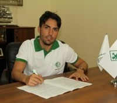
- ¿Xavi o Iniesta?
- Busquets.
- Bah, en serio. ¿Xavi o Iniesta?
- ¿En serio? Mario Rosas.
Soy tan vago que perdería un concurso de vagos por no presentarme. Soy tan vago que mi foto debería estar al lado de la entrada de vago, ga
(Del lat. vacŭus) en la enciclopedia. Soy tan vago que empiezo este artículo con un par de tópicos que apestan, y soy tan vago que retomo aquí lo que dejé ayer a medias. Soy tan vago que una vez estuve tres días sobreviviendo a base de azúcar y cerveza por no cruzar la calle hasta el supermercado. Soy vago, sí, extremo, y lo saben mis amigos, mi familia y mis compañeros de trabajo. Lo sabe hasta el colega Borja Barba, que perdona con infinita comprensión mi catálogo de excusas para no escribir apenas en Diarios de Fútbol. Soy tan vago que mi pereza es mayor que mi vanidad, porque si subo algo aquí, y algún muchacho tipo Bortibort me dice en Twitter, oye mola eso que has escrito, me pongo en modo pavo real, abro mis plumas y llamo a mi novia: ¿Ves? No he tendido la ropa, no he puesto el lavavajillas y no he bajado a comprar… pero mira esto.
Soy tan vago que soy muy de Mario Rosas. Por imperfecto. Por humano en esta época de deportistas modelo. Por inmoral. La semana pasada fichó por el Huesca, y soy tan vago que quería escribir algo pero no lo hago hasta ahora. Y porque la alternativa a la escritura era ir al gimnasio, que conste. Hasta hace poco, Mario estaba en no sé qué equipo de Azerbaijan o por ahí. Un día entré en la web y no entendí mucho, pero llegué hasta su ficha, y a su foto con sonrisa de jugón, que parecía la foto de un jugador de béisbol molón. La vi y pensé, qué cabrón. En Azerbaijan, qué tío, con un par.
Para el que no lo sepa, Mario Rosas nació en Málaga. Con 12 o 13 años el Barcelona lo reclutó para La Masia. No tardó en ser la estrella de su equipo en cada uno de los escalones que precedieron su salto mordido a la plantilla profesional. “El bueno era Mario”, recuerda Xavi, amigo y escolta en el verde, cada vez que tiene ocasión. “El bueno era Mario”, confirma Iniesta, que lo observaba con admiración, unos años menor. Nadie dudaba de su valía, encerrada en un cuerpo enjuto de menos de 1,70 de altura y peso escaso, que decantaba partidos desde la mediapunta. El creativo de toda la vida. Ni seleccionadores de las sub-loquefuera, ni los jugadores del primer equipo. Con 17 años subió al vestuario de los mayores. Nadie dudaba. No tardó en compinchar con Guardiola y Figo, no tardó en convencer a Louis Van Gaal. Talento llamando a talento. La promesa a punto de confirmar.
Y Mario llegó. Pero no se quedó. Tuvo algún minuto en Liga, calentó la banda incluso en Champions, y luego se enredó en lesiones musculares y matices que con el tiempo devienen excusas. Se dejó llevar, resumiendo, y al salir del Barça todavía más. Una vez lo entrevisté, una de esas entrevistas largas y pretendidamente profundas, y me dijo que no se arrepentía de nada, que también había sido y era feliz, que no se pregunta hasta dónde, de haber tenido otra pasta, u otra pizca de suerte, podría haber llegado. No sé. Su voz me decía eso. Sus ojos, lo contrario.
Mario se fue de Barcelona y se empapó del trauma de entender que al fútbol se juega de otras maneras, allá fuera. Para muchas de ellas no estaba preparado. Deambuló por Alavés, Salamanca, Cádiz, Fulham… Hasta estuvo en una pretemporada en Estados Unidos, flipando. Le dieron un fajo de billetes y una lista de entrenamientos. “Has de venir aquí, aquí y aquí, a tal hora. El resto del tiempo haced lo que queráis”. Eso, en un resort de lujo, o parecido. No llegó a debutar, claro.
El desplome de Mario tocó fondo cuando bajó a Tercera con el Girona. Entonces aterrizó en Castellón, y se pasó una temporada entera sin apenas jugar. El vuelco se produjo en la siguiente. Pepe Moré, el entrenador, retrasó su posición, y Mario halló un desafío bello y extraño. Quizá se dijo a sí mismo que era la última oportunidad, que ya era hora, quizá le motivó su nuevo oficio de organizador, o quizá alguien le cogió del cuello y le abrió los ojos de un broncazo. No lo sé. Pero Mario se convirtió en uno de los mejores jugadores de Segunda, añadió un montón de muescas a su fútbol y, a su vera, el Castellón pasó de pelear por no bajar a luchar por subir. Y anduvo cerca, ya con Abel en el banquillo, esperando en el mercado invernal el empujón definitivo de su dirigencia. Y hubo empujón, pero hacia abajo.
Mario salió de Castellón y volvió el Castellón de antes. También volvió el Mario de antes. El desastrito que tanto comprendemos quienes compartimos su tendencia a la autodestrucción, sin ni siquiera soñar con tener su talento. Si viviera en Huesca, me acercaría a algún entrenamiento. Merece la pena. Es inmortal en los rondos, sin un fallo, sobradísimo en los ejercicios de posesión en espacios reducidos. Seguramente no hará nada en Liga pero a mí, que vivo bien lejos y el Huesca me da igual, qué carajo me importa. Si pienso en Mario recuerdo un jugador bronceado, que utiliza las dos piernas, el exterior y el interior, se asocia en corto, es preciso en largo, sabe regatear y conduce la bola con pasito corto, tan suyo, engañando en la finta y el regate con media sonrisa. No corre, trota. No suda, brilla. Y no trabaja, juega.
Y si es tan bueno, ¿por qué no está con Iniesta y Xavi? Bien. Soy tan vago que me ahorraré sus defectos.
foto: lankaranfc.com
El Barça se cita con el Athletic
Thu, 09 Feb 2012 04:54:26 +0000
Como hace tres años, los dos equipos más laureados del torneo del K.O. se medirán en la final, ya veremos dónde. El Barcelona ha despachado esta noche al Valencia en un ejercicio de suficiencia que alcanzó la brillantez en muchos momentos, especialmente en la segunda mitad del primer tiempo. Paradójicamente, el partido había comenzado con [...]
Como hace tres años, los dos equipos más laureados del torneo del K.O. se medirán en la final, ya veremos dónde. El Barcelona ha despachado esta noche al Valencia en un ejercicio de suficiencia que alcanzó la brillantez en muchos momentos, especialmente en la segunda mitad del primer tiempo. Paradójicamente, el partido había comenzado con dominio che, pero una indecisión entre Miguel y Alves permitió a Cesc marcar de disparo parabólico y virar la contienda. Siguió un chorro de ocasiones marradas del Barcelona, cuya delantera volvió a hacer grande al portero rival. En el segundo tiempo bajó el ritmo, posesión habitual de los locales punteada por alguna ocasión del Valencia, y el partido se acabó cerrando primero con la justa expulsión de Feghouli, y luego con un estupendo disparo a la escuadra de Xavi, reaparecido hoy. Muy destacable el partido de Cesc, especialmente en el primer tiempo, y también el de Pinto, pleno de reflejos toda la noche. Al Valencia, lastrado por la ausencia obligada de Soldado, le han pesado la poca presencia de Banega y la mala actuación de Víctor Ruiz, frágil y distraído toda la noche. Y Emery sigue sin ganarle a Guardiola, que va a por su título número catorce como entrenador del Barça. Que se dice pronto.
Tres años después, San Mamés decide finalista
Tue, 07 Feb 2012 18:02:05 +0000
Han sido solo siete días. Siete días que se han hecho largos, en lo futbolístico. Siete días que han pasado lentos, pesados, con mil espacios vacíos que completar. Siete días, desde que el pasado martes el Athletic Club tomase ventaja en la eliminatoria de semifinales frente al Club Deportivo Mirandés (1-2) y acercase un poco [...]
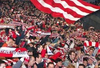
Han sido solo siete días. Siete días que se han hecho largos, en lo futbolístico. Siete días que han pasado lentos, pesados, con mil espacios vacíos que completar. Siete días, desde que el pasado martes el Athletic Club tomase ventaja en la eliminatoria de semifinales frente al Club Deportivo Mirandés (1-2) y acercase un poco más el gran sueño de la final de Copa al corazón de millares de bilbaínos. En ese breve lapso de tiempo, la cercanía de la ansiada meta ha propiciado que la imaginación se dispare con tendencia al infinito. Y los escenarios que han surcado la mente de los aficionados rojiblancos (imagino que en el caso de los mirandeses no ha sido muy diferente) han ido desde la borrachera de felicidad que se desata en los minutos finales de una eliminatoria ya sentenciada, hasta la debacle más absolutamente inesperada e ilógica. Todas las sensaciones han tenido cabida, desde el éxtasis hasta la pesadumbre más oscura. Aquí ya nadie se fía de nada.
Cada semana, y de la mano de bwin.com, os ofreceremos los partidos más interesantes del fútbol mundial, con especial atención a todos aquellos que os manejáis en el mundo de las apuestas on-line.
Una semifinal de Copa en Bilbao pasa por ser algo más que un mero evento deportivo. La historia trasciende del 105×70 y se convierte en todo un acontecimiento social en la capital vizcaína. Nada ni nadie en el Botxo es ajeno a lo que supone que el Athletic arañe con sus garras una nueva final. Baste como ejemplo lo ocurrido en el mes de marzo de 2009, en las horas previas a aquel inolvidable partido ante el Sevilla que dio el pase, veinticinco años después del último título de los leones, a la ejemplar final de Mestalla ante el FC Barcelona. Puede que esta vez el acontecimiento no haya superado al inigualable precedente. Estaba complicado. Intuyo que en algo ha podido influir el hecho de que el rival en cuestión asome desde la modestia de la segunda división B. Sin embargo, y siendo ése el mayor riesgo que amenaza el pase del Athletic, nunca se debería infravalorar lo que supone la disputa de una semifinal copera. La oportunidad de marcar una nueva muesca en la jalonada historia del club, por mucho que el camino no haya guardado la épica de ocasiones anteriores, jamás debería ser menospreciada, menos aún en esta época de pertinaz sequía.
Y Bielsa no lo ha menospreciado. No en vano, el técnico argentino reservó el pasado sábado frente al Espanyol a varios de los habituales titulares, en una práctica muy poco habitual en el rosarino. El hecho de que se saliese de su rígido guión puede interpretarse como un toque de atención a la posible relajación del equipo de cara a un compromiso que guarda una extraña relación de desigualdad entre su exigencia (un Segunda B, un resultado favorable en la ida, una afición volcada) y su trascendencia (el necesario paso previo para la disputa de una nueva final, de un nuevo hito histórico).
Poniéndome del lado contrario, y espero que el lector me permita la licencia de referirme “al lado contrario” en un caso como éste, me cuesta un mundo imaginar lo que debe implicar para una ciudad como Miranda de Ebro y un equipo como el Mirandés el estar a solo un paso de una final de Copa. Es difícil asimilar, desde la lejanía, lo que se debe de estar viviendo en la capital de la comarca burgalesa del Ebro. El sueño ha dejado de ser un sueño para convertirse en una realidad y ya a nadie se le escapa que el equipo dirigido por Carlos Pouso, personaje mayúsculo de esta edición del torneo, es un aspirante más, como otro cualquiera, a inscribir su nombre en la base del magno trofeo. La empresa es compleja. Vencer en San Mamés pasa por ser poco menos que una utopía. Pero que nadie espere un Mirandés entregado y boquiabierto bajo la mirada del santo y del viejo arco. La situación exige vaciarse, poner la cara y buscar la hazaña. No sabemos si será suficiente con la entrega que han exhibido en su trayectoria hasta la fecha en el torneo, lo que sí es seguro es que, de morir, de fracasar en su última proeza, lo harán en la orilla, con todos los honores y bajo el unánime reconocimiento de San Mamés, en un reflejo de lo que toda la España futbolística le debe agradecer a este Mirandés.
La victoria visitante apenas se contempla en las cuotas de apuestas en bwin. Se paga a 11.50 euros, por 5 del empate y 1.28 de la victoria local. Es curioso que, pese a apenas contemplarse la posibilidad de victoria rojilla, sí que se considera, y mucho, la probabilidad de que los de Pouso anoten, al menos, un tanto (1.09), cuota que aumentaría notablemente si fuese uno y solo uno el gol anotado por los visitantes (2.65). Sí se prevé un partido abierto, fundamentalmente porque el equipo de Bielsa no sabe jugar a otra cosa que no sea defenderse atacando. El over 3.5, resultado más que plausible, se pagaría a 2.70 euros por euro apostado, mientras que un gol de Fernando Llorente, enrachado, cotizaría a 1.60, 3.75 si fuesen dos o más. Interesante.
Aaron Ramsey, fútbol y rugby
Sun, 05 Feb 2012 15:37:10 +0000
Algún día seré el capitán de Gales, piensa Aaron James Ramsey a sus 17 años cuatro meses y veintidós días, una idea que aflora solo cuando logra olvidarse un segundo de porqué Dave Jones, nacido en Liverpool pero entrenador del Cardiff, me has dejado en el banquillo en la tarde soleada de Londres, precisamente hoy [...]
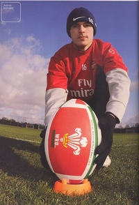Algún día seré el capitán de Gales, piensa Aaron James Ramsey a sus 17 años cuatro meses y veintidós días, una idea que aflora solo cuando logra olvidarse un segundo de porqué Dave Jones, nacido en Liverpool pero entrenador del Cardiff, me has dejado en el banquillo en la tarde soleada de Londres, precisamente hoy que es la primera vez que pisamos este estadio por dentro, que me ha conmovido vacío y ahora me estremece porque se han agrupado noventa mil almas sumando las suyas y las nuestras. El camino a Wembley estaba escrito desde Middlesbrough, cuartos de final, el partido que vio todo el mundo, que vio Sir Alex Ferguson para posteriormente descolgar el teléfono y marcar mi número. Poco nos costaría ponernos de acuerdo porque si me había fijado en alguien en mi vida, si me preguntaban cuál era mi ídolo y no te alargues, sé concreto, porque sólo puedes decir uno y sólo uno, ese era en Ryan Giggs. Un galés que vestía impoluto de red devil, y porqué no iba a vestir yo esa camiseta si la oportunidad se presentaba, si mi único pero era estar relacionado con John Benjamin Toschack por arrebarle un récord, el de precocidad en Cardiff.
Allí estaba Aaron James Ramsey, saliendo al terreno de juego en la última media hora, observador a cámara lenta de la jugada que decidiría el título. Una defensa clavada en el césped mientras al portero Enckelman se le escabullía el balón de las manos, el compañero Roger Johnson no reaccionaba y la punta de la bota de Nwanku Kanu pasaba por allí. Uno a cero, Portsmouth campeón de la FA Cup.
El viaje a Manchester se fue al garete porque apareció Arsène Wenger, y no el Arsenal, sino Arsène Wenger, para contarle que el club al que entrena siempre da opciones a los jóvenes, que podrá competir al máximo nivel, que lo repito las veces que haga falta, creo en ti eres presente y eres futuro.
Unas semanas después Aaron Ramsey se enfundaba la malla de los gunners. En agosto debutaría en la Champions League contra el Twente. Al mes lo haría en liga frente al Blackburn Rovers y en noviembre se armaría por primera vez con los colores de la selección absoluta. A sus 17 años, diez meses y veinticuatro días, Aaron James Ramsey veía más cerca que nunca ser el capitán de Gales y lucir el distintivo que reposaba aquella noche en el brazo izquierdo de Craig Bellamy.
En Londres había un espejo en el que mirarse, un líder de sus características que iba de área a área y se había convertido, tras la marcha de Thierry Henry, en el jugador más importante del club. Todo el Emirates Stadium se lo puso en la cabeza, mira Aaron, fíjate bien, aquí está el camino, tú serás el nuevo Cesc Fábregas. El mismo Cesc Fábregas que el 27 de febrero de 2010 le marca un penalti al Stoke y dice que ya está bien, que de estas ha visto tres, Abou, Eduardo y Aaron, que qué puede decir, que es difícil, que si no estamos suficientemente protegidos y hablas con el árbitro y te dice play on play on y sé que esto es Inglaterra pero hay un límite.
Ryan Shawcross se marcha llorando al vestuario y Aaron James Ramsey, a sus 19 años dos meses y un día, al hospital con una pierna rota. Quién le iba a decir unos años atrás que la entrada más dura posible le esperaba en la senda del fútbol. Él que había antepuesto el juego de caballeros jugado por villanos al juego de villanos jugado por caballeros.
He’s Aaron Ramsey, He is a Welshie
he loves the rugby, just like his dad
he told sir Alex, You’ll never have me
because I’m an Arsenal lad!
Hay pocos casos de jugadores de rugby que se hayan pasado al fútbol o al contrario, jugadores de fútbol que hayan destacado en el rugby. Puede que el inglés Danny Cipriani, que en su momento llegó a jugar con los reservas del Queens Park Rangers. Está Luke McAlister, internacional neozelandés que de joven hizo una prueba con el Manchester United. Los hermanos irlandeses Kevin y Mick O’Flanagan, que en los años cuarenta representaron a su país en ambos deportes, pero en definitiva hay pocos ejemplos. El de Ramsey es uno de los más recientes. En sus días de estudio en Caerphilly, en el sur de Gales, compaginaba la práctica de fútbol con el rugby, aunque ya se había decantado por el primero cuando los ojeadores del St. Helens, club que participa en la máxima competición europea, fueron a buscarle. Puede que aquél día en Stoke-on-Trent recordara su elección, cuando les dijo a los representantes de los Saints que gracias pero no me interesa, son muy amables pero ya he firmado por el Cardiff City. Resulta irónico que Ramsey sufriera su lesión ante el Stoke, lo más parecido al rugby en el mundo del fútbol. Tibia y peroné, sin pronóstico inicial de recuperación, quién sabe si volvería a jugar. En el imaginario del futbolista quedaba muy lejos ese día en el que debía capitanear las ilusiones de su país.
Un mes sin andar. La primera pregunta va dirigida a uno mismo: ¿Volveré? Había que olvidar por un tiempo el deporte y concentrarse en ganar el valor necesario para presentarse diariamente a las sesiones de recuperación. Un día pensar en positivo, que coincidieran dos días buenos en una semana, y al fin volver a echarlo tantísimo de menos. Nueve meses después de Shawcross, Aaron James Ramsey volvió a pisar un terreno de juego con la camiseta roja y los pantalones blancos. Los Wolverhampton Wanderers visitaban las instalaciones de los reservas gunners. Allí el joven galés volvía a empezar de cero. Puede que futbolísticamente desde un punto más remoto que aquel banquillo de Wembley, con Dave Jones a un lado y la final perdida. En términos contractuales gozaba de total seguridad porque el Arsenal le había extendido el contrato en plena convalecencia.
Antes de regresar al primer equipo probó una cesión de tres meses al Nottingham Forest. En enero de 2011 se decidió por una segunda al Cardiff City, porque la tierra de mis padres es tan querida para mí que seguro me da el último empujón a la élite. El 12 de marzo, más de un año después de su lesión, Aaron Ramsey estaba sentado en un banquillo, esperando su oportunidad en la misma competición que le había dado a conocer. Saltó al césped de Old Trafford sustituyendo a Abou Diaby en el minuto 72, y aunque ese día no le enfadó la suplencia, su equipo también perdió y cayó eliminado.
Unos días más tarde, el desaparecido Gary Speed nombraba a Aaron James Ramsey, 20 años y 90 días, capitán de la selección de Gales. Un poco pronto, pensó Wenger. Seguramente el futbolista tampoco se lo esperaba, pese al algún día seré capitán que había llevado en mente desde su debut.
Ramsey es habitual en los planes del técnico francés y empieza a enseñar las cualidades que se le intuían antes de Stoke. No ha explotado aún, pero se le espera, si bien el afamado Jack Wilshere ha aprovechado su ausencia para adelantarle por la derecha.
Esta tarde, el futbolista galés que un día quiso jugar al rugby y después prefirió el fútbol, dará gracias al calendario por haber situado el partido del Arsenal en sábado. Hoy empieza el Seis Naciones para Gales, que juega ante Irlanda a las 4 de la tarde. De haber escogido el otro camino, porqué no iba a vestir esa camiseta si la oportunidad se presentaba. En otro escenario en otro deporte, cantaría La tierra de mis padres con catorce y no con diez.
Enlaces de interés / Fuentes
The gunning hawk | Aaron Ramsey on choosing football over rugby
BBC | Ramsey’s debut with Wales
Youtube | La lesión de Ramsey
En DDF | La pasión y el compromiso
En DDF | Gary Speed. Futbolista, héroe, persona
Lista | Jugadores que han cambiado entre diferentes códigos de fútbol
Granero: ‘Mourinho consigue que estemos con él a muerte’
Sat, 04 Feb 2012 18:56:31 +0000
El canterano del Real Madrid, en declaraciones exclusivas a la plataforma de juego online bwin, ha valorado su vuelta a la titularidad tras el partido contra el Zaragoza, además de opinar sobre dos grandes encuentros de la jornada 22 de Liga: Atlético de Madrid-Valencia y Sevilla-Villarreal. Esteban Granero, mediocentro natal de la casa merengue, vuelve [...]
El canterano del Real Madrid, en declaraciones exclusivas a la plataforma de juego online bwin, ha valorado su vuelta a la titularidad tras el partido contra el Zaragoza, además de opinar sobre dos grandes encuentros de la jornada 22 de Liga: Atlético de Madrid-Valencia y Sevilla-Villarreal.
Esteban Granero, mediocentro natal de la casa merengue, vuelve a disfrutar de minutos en el once titular del Real Madrid de Mourinho. Después de haber estado esperando su oportunidad durante mucho tiempo, parece que el luso vuelve a confiar en él, tras su magnífico partido la jornada pasada frente a los maños.
Y es que el madrileño lo tiene claro: “Siempre me he sentido importante”, afirma Esteban. Para el canterano, este sentimiento “no sólo se tiene que traducir en minutos de juego, sino que el hecho de estar en esta plantilla te hace sentir importante”. Granero sabe que tiene que estar totalmente disponible porque “somos una plantilla corta y en cualquier momento podemos actuar”.
El madridista, además de profesional del fútbol, es estudiante de Psicología y sabe de la importancia de la preparación mental en el éxito deportivo, ya que para él “tiene la misma influencia que otros aspectos del deporte, como la técnica y la preparación física”. A pesar de todo, asegura que “no se entrena de forma específica” y que, por eso, todavía queda “muchísimo recorrido de mejora”.
El español, aunque no ha contado mucho en los planes de Mourinho, asegura que su entrenador “tiene una forma de ser muy especial que conecta con facilidad con los jugadores”. Además, “crea un vínculo muy estrecho con nosotros y consigue que estemos a tope, que estemos con él a muerte y vayamos en la misma dirección”.
Granero, ex del Getafe, sabe que se enfrentan a un equipo complicado y no se pueden permitir perder ningún punto: “La ventaja que tenemos en Liga no nos va a relajar. Sabemos que queda una vuelta, prácticamente, y tenemos muchos partidos por delante que van a ser finales para nosotros”, aseguró Esteban. Además, confía en que “si estamos al 100%, podemos llevarnos la victoria”.
El madridista no se fía de ningún rival, y le da una importancia vital a cada choque porque “todos valen los mimos puntos. La Liga se gana en todos los partidos, y el primero es el del sábado”. A pesar de todo, Granero lo tiene claro y apuesta “absolutamente” por la victoria del Real Madrid.
Atlético de Madrid-ValenciaGranero sabe que “son dos equipos muy fuertes y de mucha calidad”, y por ello no se moja a la hora de decantarse por ninguno de ellos. “El Atlético, parece que va cogiendo buena racha y se ha convertido en un equipo muy competitivo; y el Valencia, para mí, es el tercer equipo de la Liga y tiene grandes jugadores”, asegura el mediocentro.
Sevilla-VillarrealA pesar de que los andaluces juegan en casa, Granero no lo tiene claro y no está tan seguro de la victoria del Sevilla, porque “no está en una buena racha, aunque es un equipo con grandísimos jugadores”. Además, “el Villarreal está yendo hacia arriba y cogiendo confianza, y el partido del sábado frente al Barcelona les ha hecho coger moral”, por lo que “no apostaría por un `1´ tan claramente”.
Situación de las cuotas en bwin (cuotas susceptibles de cambio)
Getafe 9.25 X 4.75 Real Madrid 1.33
Atlético de Madrid 2.05 X 3.30 Valencia 3.00
Sevilla 1.75 X 3.50 Villarreal 4.75
Charlie Williams, humor negro
Fri, 03 Feb 2012 16:00:59 +0000
Y ahora, algo completamente diferente: el futbolista comediante. Vuelco los cromos de culto sobre la mesa y los revuelvo. Entonces, solapándose unos con otros, asociándose como jamás lo harían en un campo, se me juntan el juerguista, el chupón, el negro, el que murió trágicamente, el homosexual, la maquina de enchufar goles, el bigotudo, el [...]
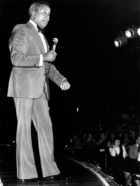Y ahora, algo completamente diferente: el futbolista comediante.
Vuelco los cromos de culto sobre la mesa y los revuelvo. Entonces, solapándose unos con otros, asociándose como jamás lo harían en un campo, se me juntan el juerguista, el chupón, el negro, el que murió trágicamente, el homosexual, la maquina de enchufar goles, el bigotudo, el de cristal y uno raro que destaca sobre el resto. Es Charlie Williams, de los primeros futbolistas negros en ganarse el pan en Inglaterra pero sobre todo el único de la historia en triunfar después como cómico de éxito. Pero eh, no como Julito Salinas o el Lobo Carrasco, Williams era un profesional del humor de pies a cabeza. Así, uno de los primeros humoristas negros que vio la tele inglesa fue un futbolista.
A Charlie Williams, que nació cerquita de la mina en Barnsley, el negro no le venía del hollín sino del adn paterno, un barbadeño que se había buscado la vida en Inglaterra alistándose en el ejército. Minero a los 14 lo primero relevante que hizo Charlie en su vida fue labrar una consistente carrera como central en el Doncaster Rovers. Durante once años corrió como un negro para sobrevivir como un blanco. Pateo la pelotita al cielo, se jugó los dientes, saltó, metió, estrujo las medias cargadas de barro y todas estas cosas a las que suelen dedicar su vida los defensas de segunda y tercera división. Hasta que le llegó el retiro y entonces ¿qué hizo Charlie?
Un futbolista puede ganarse la vida como entrenador, como comentarista deportivo (esta es buena porque no hace falta saber expresarse) o comerciando con las carreras de los que en su día fueron sus compañeros de profesión. A unas malas puede hasta vivir de las rentas. No faltan opciones pero Williams tenía otros planes. El tipo sabía de su raro talento y se dedicó a peinar los baretos de Yorkshire buscando trabajo en el showbusiness. Como se daba cierta maña con los gorgoritos probó de cantante hasta que comprobó que sus discursos ácidos entre coplas volvían loco al personal. Cambio el registro del micro y acabó dedicando su vida a la comedia.
Charlie lo buscó con ahinco en los garitos de media Inglaterra. Tanto que finalmente acabó convirtiéndose en cara familiar para las familias inglesas desde su atalaya en “The Comedians”, un programa de humoristas amateurs de stand-up que gozó de los favores del respetable a principios de los 70. Entre inglesazos cascándose chistes gruesos sobre pakis y sexo aparecía un negro de Barnsley amenazándoles con mudarse al lado de sus casas si no se portaban bien. Esta era una de sus bromas recurrentes. Otra era dar las gracias a dios porque aquel día no le habían deportado.
Todo esto en pleno auge del Frente Nacional. Antes de que el ska y el reagge jamaicanos asomaran por la radio británica hubo un negro que fue la bomba. Se llamaba Charlie Williams y por lo que contaba y como lo contaba nunca hubieras dicho que había sido futbolista.
Bwin y DDF te regalan entradas para el Getafe-Real Madrid
Thu, 02 Feb 2012 21:07:48 +0000
Bwin y DDF regalan una entrada doble para el partido que se disputará el próximo sábado día 4 de Febrero, a partir de las 20 horas, en el Coliseum Alfonso Pérez entre el Getafe y el Real Madrid. Tras tumbar en su feudo al Barça, los azulones pretenden convertirse en el primer equipo en mucho [...]
Bwin y DDF regalan una entrada doble para el partido que se disputará el próximo sábado día 4 de Febrero, a partir de las 20 horas, en el Coliseum Alfonso Pérez entre el Getafe y el Real Madrid. Tras tumbar en su feudo al Barça, los azulones pretenden convertirse en el primer equipo en mucho tiempo que es capaz de vencer en una temporada a los dos gigantes de nuestro fútbol. Para poder conseguir las entradas, tienes que contarnos en los comentarios de este post, con un email real para que podamos contactar contigo, tu anécdota favorita sobre alguno de los jugadores que han cruzado el Manzanares y han cambiado el blanco por el azul. La respuesta que más nos guste se lleva el premio, y el plazo para recibirlas concluye mañana viernes día 3 a las 14 horas. Anímate y… ¡suerte!
Valencia y Barcelona aplazan el desenlace
Thu, 02 Feb 2012 04:22:14 +0000
Tras un partido más sudado que bien jugado, Valencia y Barcelona han empatado (1-1) en Mestalla en su semifinal de la Copa del Rey. Un resultado que puede considerarse justo, ya que valió el tópico de un tiempo para cada equipo. Guardiola envidó con una alineación revolucionaria, con Xavi y Alves fuera –el brasileño entraría [...]
Tras un partido más sudado que bien jugado, Valencia y Barcelona han empatado (1-1) en Mestalla en su semifinal de la Copa del Rey. Un resultado que puede considerarse justo, ya que valió el tópico de un tiempo para cada equipo. Guardiola envidó con una alineación revolucionaria, con Xavi y Alves fuera –el brasileño entraría más tarde-, y que sufrió mucho ante la presión valenciana de la primera mitad. Jonas adelantó a los locales con un toque de clase tras gran penetración de Mathieu, y poco después empató el Barça con otro cabezazo de Tarzán made in Puyol. Este Barça ha decidido al fin no despreciar los córners, y eso le ayuda a que este año más de sus goles no tengan relación con el juego. Los azulgrana han dado un paso adelante en la segunda y han podido cerrar la eliminatoria, primero en un penalty que le ha parado Diego Alves a Messi y después con un palo del otro Alves, pero el partido ha acabado muriendo entre las señales de cansancio de casi todos los jugadores. Estupendo partido de Banega el eje, el indiscutible faro del Valencia cuando quiere serlo, e imperial Puyol en el otro lado, igual de lateral que de central, y que se acabó desmelenando con dos ruletas encadenadas. Fantástica vuelta aguarda.
Camisetas clásicas: la del ídolo
Wed, 01 Feb 2012 15:24:00 +0000
‘El capitán de la Roma tendría poco de qué hablar con Einstein, pero la inconsciencia le da a su juego el toque de locura y genio de los grandes idiotas del fútbol: Totti forma parte de la dinastía de Garrincha, Best, Gascoigne, Cassano. Con la ventaja de no ser cojo, ni alcohólico, ni paranoico‘. Evidentemente, [...]
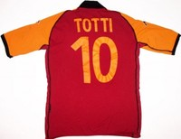
‘El capitán de la Roma tendría poco de qué hablar con Einstein, pero la inconsciencia le da a su juego el toque de locura y genio de los grandes idiotas del fútbol: Totti forma parte de la dinastía de Garrincha, Best, Gascoigne, Cassano. Con la ventaja de no ser cojo, ni alcohólico, ni paranoico‘. Evidentemente, la genialidad no es mía. Es del maestro, de Enric González (extraída de su espléndido y conocido relato del ‘cucchiaio‘), pero no he conseguido construir una definición más precisa y ocurrente de la figura del gran capitano romanista. Podría perfectamente entender que alguien no idolatrase a Totti. Sin embargo, sería algo menos transigente con aquel al que la figura del emblema giallorosso le resultase intrascendente.
De la mano de Classic Football Shirts: la tienda especializada en camisetas antiguas, nos acercamos al fútbol con una perspectiva diferente, desde los uniformes con los que se ha construído la historia del deporte rey.
Inconstante, imperfecto, carismático y genial, cuando la estrella de Totti ya languidece después de treinta y cinco años consagrados a la Roma, a uno se le viene a la cabeza la imagen eterna de Il Capitano con la camiseta romanista ajustada y ceñida al pecho como una coraza de centurión romano. Cosas del diseño y cosas de la firma deportiva, tan italiana ella, que equipa a la vieja Lupa Capitolina.
Porque pudo haber sido incluso más. Pudo haber emigrado, haber puesto su arte al servicio del Real Madrid (él mismo reconoció que estuvo realmente cerca de fichar por el conjunto blanco a principios de la pasada década) o de cualquier otro coloso europeo. Nada le hubiera quedado grande. Pero Totti no necesitó ser más que lo que era en la Roma. Se sintió cómodo, feliz y a gusto consigo mismo dando su vida deportiva al club que le permitió ser futbolista profesional y pasar de dar patadas a una pelota desvencijada en un callejón del Appio Latino a poner Trigoria a sus pies. Plenamente identificado y en perfecta simbiosis con su club, ejerciendo, orgulloso y responsable, la romanità en cada regate, en cada control imposible, en cada uno de sus más de doscientos goles como profesional. No cabe otra imagen del Totti, del genio, que no sea vestido de giallorosso.
Simeone Resurrection
Tue, 31 Jan 2012 05:19:48 +0000
Cuando Diego Pablo Simeone regresó en enero al Manzanares, el Atlético de Madrid no había ganado un solo partido a domicilio en todo el torneo liguero, lo había eliminado un Segunda B de la Copa del Rey y sólo sumaba tres victorias en los últimos doce partidos. Además, la grada clamaba en contra de la [...]
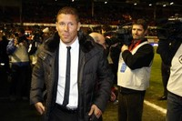Cuando Diego Pablo Simeone regresó en enero al Manzanares, el Atlético de Madrid no había ganado un solo partido a domicilio en todo el torneo liguero, lo había eliminado un Segunda B de la Copa del Rey y sólo sumaba tres victorias en los últimos doce partidos. Además, la grada clamaba en contra de la dirigencia y el aire que todo lo empapaba era el conocido, por repetido. El enredo destructivo. Manzano se perdía en un mar de excusas y la temporada se añadía a la retahíla de sinsabores de una entidad herida de muerte por un mal estructural: la familia Gil, sus satélites y las cicatrices sin cerrar.
En ese paisaje, el fichaje de Simeone alumbró una primera y fácil interpretación. La del gesto populista. La del rescate del ídolo del doblete que apaciguara los ánimos de la masa enfurecida. Y quizá fuera así, en el fondo, un despeje angustioso del consejo de administración, pero la jugada ha nacido con un éxito tan inesperado como superlativo.
Para empezar, que hablen los números. Cuatro partidos, tres victorias (dos a domicilio) y un empate (en la Rosaleda). Diez puntos de doce posibles. Ocho goles a favor y ninguno en contra. Goleada en el único partido en casa, al Villarreal. Victorias en Anoeta y el Reyno de Navarra. De mirar de reojo al descenso a observar de cerca los puestos europeos. En un mes. Casi nada.
Simeone no ha tocado lo que más brillaba: Courtois. Después ha agitado la conciencia de un equipo tendente a la dispersión. Ahora maneja soldados. Agresivos en la pelota dividida, letales en la emboscada, tratando de estar siempre todos muy cerca de todos… El Atleti maneja esos términos tan etéreos como la solidez, la personalidad, la intensidad y la gallardía. Pero el mérito no termina en la pose, en el rechinar de dientes, en el fruncir de ceño, en la patada intimidante. El mérito termina no sólo en el resultado, incontestable, sino en la imagen colectiva y en la recuperada conexión con su hinchada. Hay cuajo. Y el yunque de Simeone no achata talentos. Porque hay hueco para la expresividad, para Adrián, para Falcao, para Diego, que se exhibieron en el Calderón contra el Villarreal, y hay un resquicio para el repunte de Tiago, al que parecen haber pulsado el botón exacto del orgullo, camino de alcanzar un nivel que antes sólo había sugerido.
Acaba de empezar, vale, y los largos plazos basados en la excitación son complicados, pero el Atlético puede volver a llamarse equipo. De fútbol. Equipo de fútbol. Que, vistos los precedentes, no es poco.
foto: http://www.clubatleticodemadrid.com/
¿El estreno de Maxi López?
Sun, 29 Jan 2012 15:50:13 +0000
El Milan es un club extraño en materia de incorporaciones. Suelen fijarse en futbolistas que otros se quieren sacar de encima, goleadores de dudosa reputación, genios técnicos de carácter extravagante y en veteranos de última generación. Lo curioso es que les suele funcionar más veces de lo razonable. Sucedió con Robinho, enderezaron a Boateng, deslumbró [...]
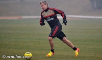El Milan es un club extraño en materia de incorporaciones. Suelen fijarse en futbolistas que otros se quieren sacar de encima, goleadores de dudosa reputación, genios técnicos de carácter extravagante y en veteranos de última generación. Lo curioso es que les suele funcionar más veces de lo razonable. Sucedió con Robinho, enderezaron a Boateng, deslumbró Cassano, aportó Yepes… En el último capítulo la gallina Maxi López ha llegado a la entidad rossonera, cuando la primera opción del club era Carlos Tévez (y la baja que incitaba a fichar Antonio Cassano). Cero coincidencias entre argentinos, salvo que ambos nacieron en Buenos Aires. Las cosas en Milán funcionan así. Quieres a Tévez tienes a López. El viernes por la tarde se anuncia el fichaje y el sábado por la mañana ya está vestido con el chándal rojo y negro. Dice Allegri que no le ha visto entrenar y le incluye en la convocatoria. Abres la página oficial del Milan en español y al entrenador le llaman Mr.Happy (ya lo han corregido). Todo es muy confuso, tanto que no es de extrañar que Maxi López juegue unos minutos esta noche ante el Cagliari (20:45).
Cada semana, y de la mano de bwin.com, os ofreceremos los partidos más interesantes del fútbol mundial, con especial atención a todos aquellos que os manejáis en el mundo de las apuestas on-line.
El primer pensamiento común sobre Maxi es la imagen de un delantero tosco que naufragó en Barcelona. Quizá esa primera experiencia fallida marcó demasiado la consideración hacia el futbolista. Después lo ha hecho más o menos bien, marcando goles en todos los sitios en los que ha estado. Seguramente la mayoría acordaremos que no es un ariete para un equipo de élite, pero si en algún momento debía intentar otro salto a un grande puede que este fuera el idóneo, una vez asentado en Italia, marcando 11 y 10 goles las últimas dos campañas con el Catania. Puede serle útil al Milan usado como alternativa o solución, no creemos que sea una primera opción.
Su mejor tanto en esta etapa italiana se lo marcó al Livorno, pero su genialidad no fue celebrada porque el Catania iba perdiendo por 3 goles a 0.
Si seguimos retrocediendo en el tiempo, el anterior destino de Maxi fue Brasil. En 2009 jugó 25 partidos con el Grémio y anotó 12 goles. Es su eapa más borrosa para el aficionado al fútbol europeo, así que adjuntamos un vídeo con sus mejores jugadas.
En Brasil estuvo cedido, porque su propiedad la había adquirido un año antes el FC Moscow, que pagó 2 millones de euros al Barcelona por su traspaso. Un gran negocio, pues dos años antes a los azulgrana les había costado 16 millones. Este es su primer gol en Rússia, donde marcó 9 tantos en 22 partidos.
Cuando el Barça vio que no le interesaba demasiado el jugador, se lo cedió al Mallorca, donde firmó solamente 3 goles en 29 partidos, los números más flojos de su carrera. Nos ha quedado pendiente recuperar su gol más famoso, el tanto en Champions League contra el Chelsea que de tan lejano parece que se haya evaporado de la red.
En la casa de apuestas online de bwin tenemos todo el día para jugar a predecir el resultado del Milan – Cagliari. Atentos a la cuota de gol de Maxi López cuando salga. Se le dan bien los estrenos. Está en la convocatoria de 19 jugadores de Allegri, veremos si aguanta en la definitiva. De momento nosotros nos la jugamos a gol de Zlatan Ibrahimovic, en casa, pagado a 1’90 es una buena cuota. Recordemos que el Milan tiene que ganar porque ayer la Juventus logró un importante triunfo ante el Udinese. Además, siempre contamos con un plus en la apuestas de Ibra porque es el lanzador de penaltis. También nos la jugaremos a que el Milan domina ya en el descanso y acaba ganando el partido, a 1.80. Las cuotas sencillas son el 1 a 1.30, el empate a 5.00 y la victoria del Cagliari a 10€ por euro apostado.
Fútbol, San Valentín y todo eso
Wed, 15 Feb 2012 00:22:44 +0000
Ahora me hago el duro, claro está, pero no hace tanto no tenía más remedio que claudicar, y hacer lo que se supone que los novios deben hacer en San Valentín. Esto es: comprar, pagar, regalar, dar conversación y, si hay suerte, follar. La condena del 14 de febrero suele darse, sobre todo, en esos [...]
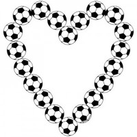Ahora me hago el duro, claro está, pero no hace tanto no tenía más remedio que claudicar, y hacer lo que se supone que los novios deben hacer en San Valentín. Esto es: comprar, pagar, regalar, dar conversación y, si hay suerte, follar. La condena del 14 de febrero suele darse, sobre todo, en esos primeros años de relación en los que uno está dispuesto a negarse a sí mismo para no negar lo que se está construyendo entre los dos. Cuando el sacrificio no lo es tanto, cuando el resto de cosas empiezan a importar menos y cuando uno reniega de lo suyo sin sentir traición por ello. Quiero decir, normalmente, o al menos en mi caso, a las novias no les va el fútbol, o no les va en el sentido enfermizo en el que nos va a muchos de nosotros. Ninguna novia que yo conozca sabe cómo quedó un Sporting-Deportivo del año 93, ni se acuerda del bigote que llevaba Meléndez en los cromos. Ninguna novia cabal asumiría de entrada una fiebre así de estúpida, y es en esos primeros años de celebrar San Valentín y mierdas varias a los que hacíamos referencia, cuando -por ir a cenar con gente que ni sabías que existía, por ir al cine a ver películas infames- uno se pierde partidos que no volverá a ver jamás.
Y eso es exactamente AMOR.
La situación se agrava si vuestra novia es como la mía. Creo que ya lo he contado alguna vez pero, total, no tengo nada mejor que decir. Me repito. Cuando conocí a Delia, ella pensaba que Ronaldinho, Romario y Ronaldo eran la misma persona con apodos distintos. Aún más, Delia creció con su madre preguntándole, en esas conversaciones que deben tener madres e hijas, supongo, en plan de mofa: ¿Te imaginas que te sale un novio que le guste el fútbol? Jajaja, sí claro, y qué más.
Pues toma.
Pero lo extraño de todo es que con Delia se obró el milagro. Empezó a venir a Castalia y dio la puta casualidad de que el Castellón no parecía aquel año el Castellón. Era la primera temporada de Oltra, batió el récord nacional de partidos sin perder, y destilaba ilusión, diversión y esas cosas que de vez en cuando, muy de vez en cuando en esta plaza, nos proporciona el fútbol. Noté enseguida que ella se fijaba en temas en los que yo no me fijaba en absoluto, tipo la ropa de no sé quién, la composición del Kinder Bueno a la hora de merendar, o la conveniencia o no de coger en invierno la manta del maletero del coche. Delia tomaba el fútbol a modo de excursión y, evidentemente, era una segura consumidora de Deportes Cuatro en el futuro inmediato, pero aún así no dejé de quererla. Y como ella partía de cero, además, y yo no hablo mucho en el campo, creó en su mente un vocabulario particular que todavía me hace gracia. Creo que ya lo he contado alguna vez pero, total, sigo sin tener nada mejor que decir. Me repito II. A los porteros, Delia los llamó paradores, porque paran. A los defensas los llamó quitadores, porque quitan. A los centrocampistas los llamó pasadores, porque pasan. A los delanteros los llamó chutadores, a veces, porque chutan, y metedores, otras veces, porque meten. Y al entrenador, al más importante, lo llamó mandador. Porque manda.
Y eso es exactamente AMOR.
foto: zazzle.es
Clemente aterriza en Gijón
Tue, 14 Feb 2012 05:51:07 +0000
Ha estado de actualidad recientemente por su rajada masiva número 1.426 y también por una gran entrevista realizada por Mónica Marchante en Espacio Reservado. Vuelve Clemente a la Liga, vuelve el espectáculo, no necesariamente para todos los públicos. Algo no encajaba en la despedida de Preciado de Gijón, con las lágrimas de Vega-Arango en homenaje [...]
Ha estado de actualidad recientemente por su rajada masiva número 1.426 y también por una gran entrevista realizada por Mónica Marchante en Espacio Reservado. Vuelve Clemente a la Liga, vuelve el espectáculo, no necesariamente para todos los públicos. Algo no encajaba en la despedida de Preciado de Gijón, con las lágrimas de Vega-Arango en homenaje al tipo al que estaban echando, y el extraño caso se ha completado con la llegada de un hombre que genera tanto polémica como cariño su predecesor. Leyenda del Athletic, controvertido hasta el final como seleccionador –servidor asistió hace pocos días a la última discusión respecto al verdadero potencial de aquella España del 94- en los últimos años se ha despeñado su caché al tiempo que se difuminaba su perfil. Clemente se ha convertido en una especie de trotamundos, que tan pronto aparecía en Marsella, en Belgrado o en Yaoundé, aventuras que comenzaban prometiendo y acababan indefectiblemente en el terreno de la anécdota o el exotismo. Sin embargo, sigue conservando cierta aura, y su credo futbolístico suele ser del agrado de quienes buscan solidez para espantar los fantasmas del descenso. A ese clavo ardiendo se agarran los dirigentes del Sporting, y los demás observaremos con curiosidad, como siempre, a este peculiar sujeto que, para bien o para mal, es ya historia del fútbol español.
Luis Suárez y Evra
Sun, 12 Feb 2012 03:30:23 +0000
Luis Suárez empezó su desencuentro con las gradas de Inglaterra con anterioridad a su condena, la que le ha apartado durante 8 partidos de los terrenos de juego a causa de un insulto racista al lateral del Manchester United Patrice Evra. Antes de la sanción ya era silbado en la mayoría de desplazamientos del Liverpool, [...]
Luis Suárez empezó su desencuentro con las gradas de Inglaterra con anterioridad a su condena, la que le ha apartado durante 8 partidos de los terrenos de juego a causa de un insulto racista al lateral del Manchester United Patrice Evra. Antes de la sanción ya era silbado en la mayoría de desplazamientos del Liverpool, por ejemplo en Stoke-on-Trent, donde cada vez que recibía el balón le acompañaba un abucheo general, incluso en la jugada que convertiría después en uno de los goles de la temporada. Aquí lo destacamos en un artículo titulado ‘La cara B’, donde apuntábamos que Suárez se dejaba caer con frecuencia, ganaba penaltis que otros ni olerían, protestaba de manera poco elegante al colegiado, exageraba las entradas de sus adversarios y, si hacía falta, ponía la mano en el área pequeña para que el balón no entrase en su portería. La sanción impuesta por la FA se la había ganado a pulso, cometido o no el insulto en la acción con Evra. La conducta del delantero ha sido poco deportiva en este inicio de temporada.
Este sábado la casualidad del fútbol ha propiciado un reencuentro incómodo entre los protagonistas 15 de octubre. La intervención de Patrice Evra en la sentencia de Luis Suárez fue clave para la decisión final, que acabó convirtiéndose en la palabra de uno contra la del otro. En el saludo entre los equipos el uruguayo ha negado la mano al francés, aunque cierta parte de la afición del Liverpool defiende que ha sucedido precisamente lo opuesto. En todo caso, a expensas de novedades en el asunto, el vídeo parece indicar lo primero. Posteriormente Evra ha estirado del brazo a Suárez cuando este apretaba la mano de David de Gea, y Rio Ferdinand, capitán del Manchester United, se ha apuntado a la fiesta negando la mano al delantero del Liverpool.
Luis Suárez ha mantenido un comportamiento correcto durante el transcurso del partido, algo poco habitual en él. Ha marcado el tanto que hacía soñar con la remontada red, el 2 a 1, y al término del partido se ha marchado calmado hacia su vestuario. En cambio, Evra ha preferido celebrar con más energía de la normal la victoria, dirigiéndose a la zona donde estaba el uruguayo para provocar una reacción en su enemigo. En las reacciones posteriores, Alex Ferguson ha apuntado al delantero como único responsable del despropósito: “Suárez es una vergüenza para el Liverpool”.
Si acordamos que el primer paso, como parecen indicar las imágenes, es responsabilidad de Suárez, efectivamente, él es el primer responsable del cúmulo de gestos irrespetuosos. Ha negado el saludo a Patrice Evra. Deberíamos preguntarnos entonces hasta qué punto es preocupante que dos futbolistas no se den la mano si, como se ha demostrado después, esto no implica que vayan a tener una conducta antideportiva durante el partido. ¿Hay causas más nobles que otras para negar un saludo? ¿Hay tanta diferencia entre el no saludo de Wayne Bridge a John Terry y el de Luis Suárez a Patrice Evra para que uno sea aplaudido y el otro condenado? ¿Tiene Luis Suárez que saludar al que según él, ha mentido sobre sus intenciones en los hechos del 15 de octubre? ¿Es más punible el no saludo de Luis Suárez que la reacción física y con contacto desagradable -el agarrón- de Patrice Evra como reacción? ¿Y que el posterior no saludo de Rio Ferdinand? Si acordamos que no dar la mano a un rival es un gesto antideportivo, pero inofensivo, ¿en qué situación ponemos una provocación manifiesta e inoportuna de Patrice Evra con el partido concluído?
Son diferentes cuestiones que dividen la responsabilidad de lo sucedido, conservando por supuesto Luis Suárez su parte importante. En todo caso, suficientes como para que Alex Ferguson tenga dónde mirar en su propio equipo antes de hacer más grande la repulsión general de la Premier hacia el uruguayo.
BBC | Luis Suárez is a disgrace, says Alex Ferguson
The Guardian | Liverpool Luis Suarez could have caused a riot, says Alex Ferguson
El tiro de gracia a la Copa
Fri, 10 Feb 2012 18:54:30 +0000
Como ya es sabido, FC Barcelona y Athletic Club reeditarán el próximo mes de mayo la Final de Copa del Rey del pasado año 2009. Con el recuerdo del gran espectáculo, tanto deportivo como social, que supuso aquel acontecimiento, ambos finalistas aguardan con tensa expectación el anuncio de la sede definitiva de su nuevo enfrentamiento. [...]
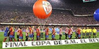
Como ya es sabido, FC Barcelona y Athletic Club reeditarán el próximo mes de mayo la Final de Copa del Rey del pasado año 2009. Con el recuerdo del gran espectáculo, tanto deportivo como social, que supuso aquel acontecimiento, ambos finalistas aguardan con tensa expectación el anuncio de la sede definitiva de su nuevo enfrentamiento. Desgraciadamente, no nos suena extraño. No nos parece chocante ni ridículo que, conociendo ya los nombres de los dos ilusionados finalistas, teniendo ya a las dos aficiones calentando motores para un partido que suele ser poco menos que una fiesta de fin de temporada para los clubes participantes, aún no sepamos, a tres meses vista, ni la sede ni la fecha definitiva del encuentro.
Total, ¿para qué? ¿Para qué se van a facilitar las cosas a los finalistas? ¿Para qué se va a tratar de ayudar a movilizar los desplazamientos en masa que siempre suponen este tipo de partidos? En España, por encima del aficionado, que es el verdadero motor del tinglado, están los clubes, las instituciones. Y nada hace pensar que la situación pueda revertir.
Hay federaciones que optan por una sede única en casos similares. Ocurre en Inglaterra, ejemplo internacional con la organización de la FA Cup, y la inigualable sede de Wembley. Pase lo que pase, ocurra lo que ocurra, en el horizonte de cualquier club con mínimas aspiraciones aparece cada temporada el Olympic Way del colosal estadio londinense. Lo mismo ocurre en Alemania, con el Olímpico de Berlín, o en Francia con el Stade de France parisino. Todos saben donde van a jugar antes de que comience el torneo. No hay lugar a discusiones bizantinas, no hay sitio para improvisaciones de última hora.
¿Podría la RFEF optar en el caso de nuestra Copa por una sede única, independientemente de los finalistas, al estilo de los ejemplos citados? Pues por qué no. Fijar la sede única y permanente para la Final del campeonato de España en un estadio como, por ejemplo, el Santiago Bernabéu sería un aliciente extra para una competición ya de por sí demasiado maltratada. Saber de antemano el lugar de disputa de la final enriquecería la imagen del torneo y daría un salto de reconocimiento a una competición que para nadie, excepto para los finalistas, parece ser importante. Y si no, quizá un sistema de rotación de sedes (con alternancia entre Bernabéu, Calderón/Peineta, Camp Nou, Mestalla/Nou Mestalla, Cornellà-El Prat o incluso, por qué no, San Mamés/San Mamés Barria), con el que los participantes y sus aficiones pudieran dibujar un horizonte definido, con la vista puesta en la disputa de la gran final en una sede concreta. “Sí, sí, sí, nos vamos a… (ponga aquí lo que usted quiera)”
Lo que no parece tolerable es que, tres meses antes de la disputa de la final, sepamos todo menos el lugar y la hora. Y no lo digo ya desde el punto de vista de afición afectada (en este absurdo fuego cruzado entre Real Madrid y FC Barcelona que parece haberse desatado por la supuesta negativa madridista a albergar la Final en el Bernabéu la víctima no es otra que el Athletic Club y su afición), sino desde el punto de vista de reconocimiento a dos clubes, los finalistas, que no merecen semejante desatención y falta de previsión y de respeto a una competición que no parece sino estorbar en el calendario.
La decisión de dónde se disputará la final de 2012 aún está, como digo, en el aire, y no se conocerá hasta el próximo lunes tras la reunión que mantendrán ambos clubes con la Real Federación. Si surgiera acuerdo a tres bandas, se solicitaría la autorización al club propietario del estadio en cuestión (club que, no lo olvidemos, percibiría tres millones de euros por la ‘cesión’). Si no hubiera acuerdo consensuado, sería la propia Federación la que tomase una decisión. Sin embargo, siempre podría el club propietario del estadio excusar la cesión del estadio con alguna causa justificada. Es precisamente la vía por la que parece optar el Real Madrid, aunque aún no se haya pronunciado de manera oficial puesto que nadie se ha dirigido al club de manera oficial, lo que plantearía un escenario bananero que supondría el definitivo tiro de gracia a una competición que se ha acabado convirtiendo en el escupidero del fútbol nacional.
Sin embargo, y como hoy mismo apunta Santiago Segurola en su columna de Marca, “por razones geográficas, de empaque y de escenario cotidiano de un club monumental como el Real Madrid” se debería apostar por la celebración del acontecimiento en el coliseo del Paseo de la Castellana. Realmente no existe mejor opción, y es lo que ambos clubes y aficiones demandan. La del Athletic por un único motivo de accesibilidad geográfica y de aforo, la del Barça realmente no lo sé aunque puedo intuirlo.
Organización, previsión y ganas de hacer las cosas bien hechas. Tres condicionantes bajo los que hubiera sido extremadamente sencillo evitar el problema.
La gran depresión maña
Thu, 09 Feb 2012 18:40:27 +0000
Domingo dieciséis de octubre de dos mil once. Octava jornada de Liga. El Real Zaragoza acaba de imponerse con holgura a la Real Sociedad en La Romareda con dos tantos de Hélder Postiga y duerme desde esa misma noche en la novena posición de la tabla y mirando hacia arriba. El proyecto de Javier Aguirre [...]
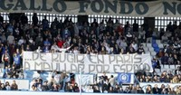
Domingo dieciséis de octubre de dos mil once. Octava jornada de Liga. El Real Zaragoza acaba de imponerse con holgura a la Real Sociedad en La Romareda con dos tantos de Hélder Postiga y duerme desde esa misma noche en la novena posición de la tabla y mirando hacia arriba. El proyecto de Javier Aguirre parece que funciona según lo previsto, los nuevos fichajes (el ya mencionado Postiga, el meta Roberto, el joven extremo Juan Carlos o el veterano exespanyolista Luis García, entre otros) funcionan y parecen haberse acoplado desde el primer momento al equipo. Nada hace pensar en lo que los acontecimientos inmediatos deparan al club a la vuelta de la esquina.
Pero aquella de la octava jornada frente a la Real fue la última victoria zaragocista en Liga. Han pasado casi cuatro meses y una deplorable racha de ¡once! derrotas y dos empates ha colocado al club maño en una delicadísima situación clasificatoria, hasta quedarse descolgado en la tabla a, ni más ni menos, que once puntos de la salvación.
El volantazo que supuso la contratación de Manolo Jiménez, quien sustituyó en el banquillo al Vasco Aguirre durante el parón navideño no ha funcionado. Un punto de de doce disputados es el paupérrimo bagaje presentado por el nuevo proyecto de salvación encabezado por el técnico andaluz. Eso da a entender que quizá el problema no estuviera en el banquillo. Se suceden las reuniones, las charlas, las conjuras y las sesiones de recuperación anímica y de estímulo, pero todo parece que es insuficiente. La pesadumbre y la sensación de situación extrema tienen a la plantilla atenazada. Es como si alguien supiera que el destino de la entidad ya está escrito y es imposible alterarlo.
Además, y por si fuera poco, el público ha comenzado a mostrar su desaprobación ya no solo dirigiendo sus iras hacia el palco (la famosa ‘Agapitada’ se ha convertido ya en un clásico del minuto 32 en La Romareda), sino señalando a algunos futbolistas como responsables directos del desaguisado. Y es que este Zaragoza, en el que únicamente ocho futbolistas de la primera plantilla son propiedad del club, está construido a base de retales y soluciones de emergencia de última hora. En una economía de subsistencia marcada por el proceso concursal al que el club se acogió el pasado verano, el único objetivo es el de la supervivencia y la salvación de la categoría. Todavía queda mucha Liga y muchos puntos en liza, pese a que con los números sobre la mesa es quien más complicado tiene evitar el desagüe hacia Segunda. Hay plantilla como para pensar en el milagro. Lo que ya no es tan seguro es que haya ánimo y predisposición.
Bilbao revive el sueño
Wed, 08 Feb 2012 16:12:57 +0000
Aquellos días de mayo fueron insoportables en lo emocional. Veinticinco años después, el Athletic Club iba a volver a disputar una final de Copa. Me costó muchísimo conciliar el sueño en las noches previas al partido. Me acostaba y mi cabeza empezaba a dar vueltas alrededor de los posibles escenarios que podía deparar un partido [...]
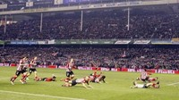
Aquellos días de mayo fueron insoportables en lo emocional. Veinticinco años después, el Athletic Club iba a volver a disputar una final de Copa. Me costó muchísimo conciliar el sueño en las noches previas al partido. Me acostaba y mi cabeza empezaba a dar vueltas alrededor de los posibles escenarios que podía deparar un partido que yo, en mis mejores pensamientos, imaginaba imprevisible. Soñaba un duelo reñido, con un Athletic peleando el empate hasta hacer buena una oportunidad postrera surgida de la nada. Pero el desenlace no siempre era feliz. Me engañaba a mí mismo con la estupidez esa de que llegar a la final ya era un éxito. Mentira. Si la disputa de una final se celebra es porque te da la opción de ganar un título. Y eso, cuando habían pasado veinticinco años del último, cuando el fútbol nacional ofrece un panorama desolador para todos aquellos que no puedan aguantar el tirón de dos colosos que acostumbran a repartirse hasta la última migaja del pastel, es una oportunidad que nunca debería ser desaprovechada.
Ayer, en una nueva gran noche para el recuerdo, de esas a las que habrá que acudir cuando lleguen momentos difíciles, el Athletic Club volvió a ofrecer a Bilbao la posibilidad de volver a sentirse grande en lo futbolístico. De nuevo, como en el 2009, la generación que creció con los ramalazos de épica del Athletic del Doblete, que se hizo adulta con aquellos inolvidables duelos europeos de mediados de los noventa y que pasó el momento más amargo de su vida en lo deportivo cuando vio cómo su equipo se salvaba milagrosamente después de haber recibido ya la extrema unción, volvió a mirar a la cara a la historia del club. Sin complejos ni vergüenza.
Lo mejor de alcanzar la segunda final copera en tres años, la trigésimosexta de la historia del club, es esa sensación de estar sentando unas bases sólidas como la estirpe del legendario roble de Gernika. Las nuevas generaciones rojiblancas ya no tendrán que acudir a los Iriondo, Venancio, Zarra, Panizo y Gaínza o al Athletic de Javier Clemente para sacar pecho y responder a las provocaciones. Este nuevo equipo de los Llorente, Javi Martínez, Iraola, Amorebieta o Muniain ha establecido, o va camino de ello, una nueva referencia temporal. Quizá no de la enjundia de las pasadas, de las que han forjado la historia del club, pero los tiempos, por desgracia, cambian. En breve, si no lo es ya, será motivo de no poco orgullo el poder presumir de tener tres cuartas partes del centro del campo de la sub 21 campeona de Europa (Muniain, Javi Martínez, Ander Herrera), lo mismo que lo acabará siendo la estampa goleadora de Fernando Llorente, quien ha adelantado ya por la derecha a referencias como Urzáiz, o, por supuesto, la inigualable atmósfera de San Mamés, un lugar que combina lo espiritual con lo meramente futbolístico con una naturalidad insólita.
No voy a repetirme. No voy a volver a incidir en lo que la disputa de una nueva final implica para un club con la idiosincrasia del Athletic. No quiero resultar pesado acerca de lo que supone la firme identidad y el sentimiento de identificación o pertenencia de un club que maneja una perfecta e ideal simbiosis entre jugadores, afición e institución en estos tiempos de valores y señorío. Tampoco pretendo que nadie comparta un parecer que tal vez tenga un punto de narcisista. Ahora solo quiero volver a disfrutar. Volver a las noches en vela. A los nervios. A esa indescriptible sensación de volver a vivir algo que creías que jamás volverías a experimentar.
Camisetas clásicas: interpretando
Mon, 06 Feb 2012 16:30:56 +0000
Hay muchas maneras de volver a sentirse un niño. Quizá una de las menos ridículas, de las más aconsejables para un tío de pelo en pecho, es sentirse futbolista. Sentirse futbolista es recuperar una de las principales actividades de la infancia. Y no es complicado. Basta juntarse con un grupo de amigos, echar un balón [...]
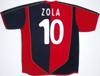
Hay muchas maneras de volver a sentirse un niño. Quizá una de las menos ridículas, de las más aconsejables para un tío de pelo en pecho, es sentirse futbolista. Sentirse futbolista es recuperar una de las principales actividades de la infancia. Y no es complicado. Basta juntarse con un grupo de amigos, echar un balón a rodar y uno se encuentra de nuevo como cuando tenía doce años y los partidos duraban hasta que se ponía el sol. Lo bueno es que, a partir de ciertos niveles, ni siquiera es necesaria una cierta condición física para creerse alguien… o eso cree uno. (Llegados a este punto, os voy a hacer una recomendación desinteresada: jamás toméis la inoportuna decisión de grabar en vídeo una de vuestras pachangas con los colegas para después verlo juntos y echaros unas risas; lo lamentaréis).
De la mano de Classic Football Shirts, la tienda especializada en camisetas antiguas, nos acercamos al fútbol con una perspectiva diferente, desde los uniformes con los que se ha construído la historia del deporte rey.
Para todos para los que el fútbol es una actividad que trasciende de lo meramente deportivo, la pachanguita semanal es algo más que una oportunidad de intentar, a duras penas, mantenerse en forma. Tiene algo de infantil y mucho de teatral. Porque uno juega al fútbol, o lo intenta, sí, pero también actúa y desempeña su papel. Es sencillo.
Estás calentando y tratando de estirar unos músculos que, por mucho que los estires, jamás volverán a la elasticidad de hace quince años. Miras hacia abajo, te ves a ti mismo vestido de albiceleste, dejas volar tu imaginación y, de repente, ya no estás jugando en un descampado ni en una plancha de hormigón rodeada por vallas metálicas como si fuese una jaula. Eres un guerrero, un ‘Apache’, y vas con el cuchillo entre los dientes, porque eso es lo que se espera de ti, de esa camiseta que llevas. Estás debajo de un graderío abarrotado, bajo una incesante lluvia de papelitos y con el estruendo atronador de sesenta mil gargantas que te empujan a interpretar un papel que, mañana por la mañana, cuando vuelvas a anudarte la corbata, será solo motivo de privado sonrojo.
Lo bueno es que el papel que has decidido interpretar esa tarde es tu pequeño secreto. Nadie más lo sabe. Da miedo pensar en el ridículo que podrías llegar a hacer si alguien se enterase del secreto de tu estúpida motivación. Y por eso, porque nadie más lo sabe, te relajas porque nadie te va a juzgar por cómo interpretes tu rol. Y te atreves con todo, el registro es variadísimo y no quieres encasillarte. Lo mismo te vistes de delantero peleón y fajador, dispuesto a morir por cazar un remate en el área pequeña, que de imperial y áspero defensor con tendencia a rascar en cada balón dividido y hacerle sentir al rival, a tu colega que no sabe a quién tiene delante, el aliento de una bestia enfurecida cada vez que se posiciona para recibir de espaldas. Porque, todo el mundo lo sabe, no es lo mismo vestirse de genio indolente que de sacrificado y abnegado peón. Porque uno no se desempeña igual ni da el mismo trato al balón si ese día ha escogido la piel de, pongamos, un perro rabioso de Cork (Dios quiera que nadie haya tenido el desatino de vestirse de su némesis) que si ha sacado del armario el atuendo del más fino estilista que ha dado la isla de Cerdeña. Y es en esa variedad, en esa riqueza de matices y de detalles de interpretación donde reside el mayor de nuestros secretos. El secreto que nos hace volver a vernos con quince, veinte, treinta años menos, con las rodillas descarnadas, el pelo churretoso y las punteras destrozadas de los zapatos. Capaces de ser quienes nosotros queramos. Sabiendo que, por mucho que crezcamos, por muchas responsabilidades que cada día se depositen sobre nuestros hombros, siempre nos quedará un hueco para volver a ser un niño.
Puedes comprar estas camisetas, y cientos más, en Classic Football Shirts.
Chelsea-Manchester United: venidos a menos
Sat, 04 Feb 2012 23:47:45 +0000
No hace tanto eran los mejores equipos de Europa. Mourinho había creado un mecano entre roca y velocidad que construía carreteras con lo que quedaba de sus rivales, mientras que Ferguson, feliz superviviente de la noche de los tiempos, completaba la fenomenal madurez de sus babes con la orfebrería brutal de Rooney y el ansia [...]
No hace tanto eran los mejores equipos de Europa. Mourinho había creado un mecano entre roca y velocidad que construía carreteras con lo que quedaba de sus rivales, mientras que Ferguson, feliz superviviente de la noche de los tiempos, completaba la fenomenal madurez de sus babes con la orfebrería brutal de Rooney y el ansia arrolladora del emergente Cristiano. Un mano a mano cósmico que acabó incluyendo siete premiers y una final de la Champions League entre shakesperiana y rompecorazones. Grandes tiempos en el puente y en el teatro.
Mañana se enfrentan de nuevo, pero la sensación es bien distinta. El mismo viento de petrodólares que convocó Abramovich ha traído a los jeques a la Premier League, y muy especialmente a Mansour bin Zayed, empeñado en convertir al City en el equipo de referencia en Europa. Repleto de jugadores de clase mundial, el incómodo vecino del United goza de la condición de máximo aspirante al título liguero, y muchos pensamos que sólo la confianza desmedida en un entrenador de palo priva a los citizens de disfrutar desde ya en un puesto en la élite europea. Así las cosas, con un equipo francamente inferior al del pasado, sólo la competitividad extrema y la inercia del campeón mantienen en la lucha a los diablos rojos. Los blues hace tiempo que se alejaron de ella.
Cada semana, y de la mano de bwin.com, os ofreceremos los partidos más interesantes del fútbol mundial, con especial atención a todos aquellos que os manejáis en el mundo de las apuestas on-line.
La lejanía del título da lugar indefectiblemente a ambientes alterados, y el runrún que hace tiempo lleva sonando alrededor de Villas-Boas no es ajeno a tal circunstancia. Ayer mismo salía en The Sun el rumor de una vuelta de Mou, y aunque la fiabilidad de la noticia es nula, sí da una indicación de cuáles son los temas de moda ahora mismo alrededor del club. El pelirrojo entrenador se ha descolgado diciendo que le cuesta mantener su autoridad en un vestuario tan curtido, y también lanzó unas declaraciones ambiguas sobre Torres en las que puede entreverse que estos partidos –con Drogba en la copa de África- pueden ser su última oportunidad; algo normal, si consideramos que el madrileño lleva doce partidos seguidos son anotar, y sus números desde que llegó a Londres son paupérrimos. Un lastre considerable, que puede tener algo que ver con la sangría blue en casa, donde vuelan los puntos como golondrinas en otoño. A este respecto, habrá que
ver cómo resulta el encaje de Gary Cahill en el equipo, y qué pasa al final con Terry, otra vez en el ojo del huracán. El dos veces ex-capitán de Inglaterra no jugará mañana.
Algo mejor pintan las cosas para sus rivales, pero no mucho más. La inesperada eliminación en Champions ante el Basilea ha dejado caer un velo de pesimismo sobre la temporada, donde el United va acumulando partidos grises que frecuentemente gana (Stoke la semana pasada), pero que a veces se le van (la derrota en casa frente al Blackburn, por ejemplo). Más que sus méritos, le mantiene vivo la irregularidad de sus vecinos, que no acaban de dar el golpe en el mesa que se presume llegará tarde o temprano. Estos días se sigue hablando de De Gea, que ahora tiene una buena oportunidad con Lindegaard un mes fuera –hasta en esto se parece su caso al de Torres-, y también del retorno al equipo de Tom Cleverley, de vuelta tras una grave lesión de rodilla. Con Nani y Rooney también recuperados y Carrick y Valencia en especial buena forma, Ferguson podrá componer un equipo muy competitivo para saltar al Bridge. Presten atención al joven Pogba, que quizá disponga de minutos, y que encandiló a Old Trafford en su debut con el primer equipo.
Incierto pronóstico para un choque tan igualado. Tanto el factor campo como el ansia de revancha aconsejan una apuesta por la victoria local (2.60 en bwin), aunque no podemos destacar ni la victoria visitante (2.65) ni un jugoso empate (2.65). Si imaginamos un contexto de pocos goles, el 1-0 al descanso se paga a 4.50, un 1-1 a 6 euros y un 0-1 a 8.50. Y si pensamos en futbolistas, conseguiremos el triple de lo apostado si creemos que mojan Mata o Welbeck, ambos de gatillo fácil este curso, una recompensa que sube a 8 si nos fiamos de ellos como autores del último tanto. Jugosos dividendos.
Joachim Schimd “O Campo”
Sat, 04 Feb 2012 05:40:22 +0000
En el momento en que comienzo a escribir este texto (o en el que tú comienzas a leerlo, da igual) se están disputando miles de partidos de fútbol a lo largo y ancho del mundo. Mujeres, hombres, niños y niñas, ancianos (también algún perro) de los cinco continentes corren ahora mismo detrás de miles de [...]
En el momento en que comienzo a escribir este texto (o en el que tú comienzas a leerlo, da igual) se están disputando miles de partidos de fútbol a lo largo y ancho del mundo. Mujeres, hombres, niños y niñas, ancianos (también algún perro) de los cinco continentes corren ahora mismo detrás de miles de balones (de cuero, plástico, tela) u objetos que ansían y simulan serlo (bolas de cinta aislante, latas de refresco, pelotas de papel). De todos esos partidos, solamente un porcentaje marginal cumplirá unos mínimos normativos. La gran mayoría, por ejemplo, obviará la regla del fuera de juego (los linieres son un lujo accesorio) o carecerá de árbitro (¿quién quiere ser trencilla en una pachanga de amigos?). Pocos serán entre dos equipos de once jugadores y menos aún se disputarán sobre un campo de fútbol como tal, sino en parques, descampados, playas, salones de apartamentos, lugares en los que el terreno nunca será diáfano sino que estará repleto de obstáculos que salvar… o utilizar para nuestra ventaja (una farola puede devolvernos una preciosa pared). Una gran parte de esos miles de partidos de fútbol no contará con dos porterías (con una sola se puede jugar perfectamente) y otra gran parte no contará, de hecho, con ninguna, sino con jerséis en el suelo, árboles a modo de postes, bancos de plazas haciendo de improvisadas metas. Por cada larguero real, hay cientos imaginados; por cada balón que golpea en la madera, hay decenas de discusiones de jugadores sobre si la pelota entró o no en una portería imaginada, invisible, pero previamente consensuada.
Por supuesto, la práctica totalidad de los encuentros que ahora se disputan se juegan sin áreas pintadas (aunque sí proyectadas desde puntos acordados), sin círculo central, sin líneas de fondo o laterales que separen lo que ahí acontece del resto del mundo. En esos partidos no hay línea que separe fútbol y vida.
Y esa es, precisamente, la grandeza de este juego: la manera en que está unido a las personas, más allá de las posibilidades materiales. Es algo casi natural: lancemos una pelota a un grupo de niños y ahí surge un partido espontáneamente, en el que reglamento, porterías y campo de juego serán consensuados en función de las posibilidades del lugar y a medida que se juegue. Y eso es bueno. Para jugar a este deporte no sé si universal, pero sí universalizable, no es necesario en absoluto no ya cumplir con el total de las normas que definen un partido profesional, sino con una mínima parte de ellas. Porque, aún no siendo entre dos equipos de once jugadores, careciendo de porterías, de árbitros, de balón reglamentario, de un conjunto de reglas definido… ¿son esos partidos que hemos evocado acaso otra cosa que verdadero fútbol?
Todo esto está recogido magistralmente en la serie “O Campo”, del artista alemán Joachim Schmid (Balingen, 1955). “O Campo” se compone de una veintena de fotografías realizadas vía satélite con Google Earth de sendos campos de fútbol brasileños, con la particularidad de que ninguno de ellos cumple con unos mínimos en lo que a su diseño se refiere. Al contrario, ya sea por la irregularidad del terreno sobre el que están construidos o por las constricciones urbanísticas del lugar en el que se ubican, los campos de fútbol retratados en “O Campo” fuerzan sus formas y violentan sus dimensiones hasta mostrarse como grotescas imperfecciones derivadas del intento de acercarse a la platónica forma ideal del campo de fútbol reglamentado. En ese sentido, si los juzgamos desde ese ideal, en los campos retratados por Schmid no vemos sino desproporción y fealdad, y por ello el espectador incauto pensará que en la obra de Schmid es una crítica al urbanismo improvisado de los suburbios de las ciudades contemporáneas, que impiden el necesario desarrollo del ocio en la pulcritud de un espacio pensado y construido para el mismo. Pero acertará solo en parte, si no es capaz de ver cómo Schmid realiza al mismo tiempo (y fundamentalmente) una celebración del juego de fútbol en su vertiente más espontánea, un canto a la grandeza de una práctica deportiva que es capaz de amoldarse –como un resistente organismo- a las condiciones a priori más desfavorables para su desarrollo (los campos de Schmid poseen, en este sentido, la misma belleza que la hierba que emerge en las grietas del asfalto). Precisamente, ese fútbol espontáneo, natural, de supervivencia, que Schmid reivindica es para muchos el verdadero fútbol, mucho más que el practicado bajo los focos por las grandes estrellas. En sus propias palabras: ¿quién ha dicho que para jugar a fútbol los porteros de ambos equipos han de poder verse desde sus respectivas porterías?
Joachim Schmid ha trabajado habitualmente con archivos fotográficos y de hecho es uno de los pioneros en ese campo de trabajo (sus primeros trabajos en este sentido datan de finales de los 70). En un movimiento lógico, actualmente Internet es un lugar habitual del que se nutre de material de trabajo. En ese sentido, no es la primera vez que usa Google Earth para el desarrollo de una serie. Tampoco “O Campo” es su primer trabajo que gira en torno al fútbol. En 2002 creó una serie de esquemas que resumían a través de un código de colores diferentes partidos de la Bundesliga alemana y, al año siguiente, realizó un conjunto de dibujos que en los que trazó sobre el papel la trayectoria que el balón había seguido durante los noventa minutos de varios partidos, resultando unas composiciones cercanas visualmente a una celosía irregular, una suerte de rejillas más espesas por el centro del papel (que correspondería al centro del campo) que por los extremos (las áreas). Sin embargo, desde nuestro punto de vista “O Campo” es la serie de temática futbolística que mejor encaja con el resto de los trabajos de Schmid, además de la que más contribuye a la comprensión del fenómeno social que el fútbol es en la actualidad. En lo referente a la primera aseveración, “O Campo” casa perfectamente en el proyecto de investigación sobre la cultura visual popular y el modo en que la sociedad (y los individuos que la componen) se expresa a través de la misma que toda la trayectoria de Joachim Schmid supone. En primer lugar, por el uso que el artista hace de una herramienta al alcance de todos como es el Google Earth, pero también porque las imágenes se presentan sin modificación ninguna, como una suerte de ready mades virtuales. En esta estrategia creativa, Schmid huye de la mirada privilegiada del artista para ubicarse como un espectador más, ofreciendo imágenes que encajan en la imaginería popular contemporánea, de la que la perspectiva ofrecida por Google Earth se ha erigido en los últimos años como una parte fundamental. ¿Qué aficionado no ha visitado a través de esta herramienta su propio estadio o el campo de su barrio en el que juega cada semana? En este sentido de uso popular de la herramienta, el artista reconoce su encuentro casual con la idea de “O Campo” aún cuando la serie se desarrolla en terrenos que no le son ajenos. Fue preparando un viaje a Brasil. Mientras echaba un vistazo a los lugares que recorrería en el mismo, se encontró con el primero de los campos retratados. Ese campo dio lugar a la idea de la serie, que provocó posteriormente una búsqueda activa por su parte, no solo por Brasil, sino por otras partes del mundo. El resultado fue que este tipo de terrenos de juego de extrañas formas eran más habituales en el país sudamericano. Las razones que el propio Schmid esboza son la poca resolución de Google Earth en África (continente donde seguro podríamos encontrar más campos de este estilo) y la propia relación del deporte rey con Brasil, donde la pasión por el juego vence a cualquier barrera.
En este sentido, nos encontramos con una paradoja apuntada en “O Campo”: los mejores jugadores del mundo se forman en terrenos como los retratados en estas fotografías. Aunque, bien pensado, igual no lo es tanto. Quizá el talento crece en terrenos irregulares porque cuanto más cercano es un campo a la perfección reglamentada transmite una mayor imagen de trascendencia (profesionalismo, gravedad, tragedia) y cuanto más imperfectas son sus formas, se revela como un espacio de ocio (diversión, felicidad, recreo). Conviene señalar que en fútbol, como en cualquier otro ámbito creativo, solo se alcanzan cotas cercanas a la perfección cuando se siente cierta felicidad (si no una felicidad cierta) en lo que se hace. O citando el poema de Kirmen Uribe sobre el Athletic Club, cuando tras cada partido, sea cual sea el resultado, se regresa a casa “como cuando éramos niños / con las chamarras colgando de nuestras cabezas / y el balón en las manos”.
[Texto del catálogo "Joachim Schmid, O Campo" sita en la Sala BBK de Bilbao, hasta el 29 de febrero]
Todos están bien
Fri, 03 Feb 2012 01:05:39 +0000
Cuando ha faltado la victoria han empezado los nervios. El alarmismo ha requerido de un distanciamiento numérico con el Real Madrid para que volviese a florecer el espíritu barcelonista de toda la vida, porque en el fútbol primero hay que ganar y las otras cuestiones se discuten a posteriori. Sin embargo, en el empate y [...]
 Cuando ha faltado la victoria han empezado los nervios. El alarmismo ha requerido de un distanciamiento numérico con el Real Madrid para que volviese a florecer el espíritu barcelonista de toda la vida, porque en el fútbol primero hay que ganar y las otras cuestiones se discuten a posteriori. Sin embargo, en el empate y en la derrota, el aficionado del Barcelona tiene poco más a exigirle a su equipo, que corrió más que nunca en la desesperación de Villarreal y puso el pie en Valencia, incluso Pinto la mano, compitiendo hasta el último minuto por una final de Copa. I have the ball, I pass the ball. El estilo de juego no peligra ni se discute mientras Guardiola esté en el banquillo, esto se da por sabido. Cabe entonces entretenerse en los otros motivos de la segunda plaza, secundarios la mayoría, ensombrecidos por el monstruo competitivo en que ha resultado el segundo proyecto de José Mourinho.
Cuando ha faltado la victoria han empezado los nervios. El alarmismo ha requerido de un distanciamiento numérico con el Real Madrid para que volviese a florecer el espíritu barcelonista de toda la vida, porque en el fútbol primero hay que ganar y las otras cuestiones se discuten a posteriori. Sin embargo, en el empate y en la derrota, el aficionado del Barcelona tiene poco más a exigirle a su equipo, que corrió más que nunca en la desesperación de Villarreal y puso el pie en Valencia, incluso Pinto la mano, compitiendo hasta el último minuto por una final de Copa. I have the ball, I pass the ball. El estilo de juego no peligra ni se discute mientras Guardiola esté en el banquillo, esto se da por sabido. Cabe entonces entretenerse en los otros motivos de la segunda plaza, secundarios la mayoría, ensombrecidos por el monstruo competitivo en que ha resultado el segundo proyecto de José Mourinho.
Incidiendo en esto último, existe una sentencia casi sagrada que comparten los mejores ciclos ganadores de la humanidad: si ahora estoy abajo es porque no lo estoy haciendo todo lo bien que pudiera, y no porque el que está por encima sea mejor. Un pensamiento posiblemente prepotente para algunos, pero necesario para no empequeñecer en autoestima y creer en el mérito propio para recuperar el terreno perdido. Por mucho que fiche el Manchester City, sus vecinos del United seguirán creyendo que un resucitado Paul Scholes es cien veces mejor refuerzo que un ilusionado David Pizarro. Esta mentalidad grupal es la que ayuda al último disparo en Old Trafford a golpear en la parte interior del poste y colarse en las redes visitantes. En el Barcelona, sustentado en un modelo de juego inigualable que ha maravillado al mundo en los últimos tres años, se tiende a pensar así, reconociendo el mérito del rival pero basando sus siete puntos de desventaja en errores propios.
Leo Messi es ejemplo para todo. En el último mes de competición no ha mostrado la chispa de sus mejores partidos, y sin embargo no ha escapado nunca a las jugadas decisivas, asistente en el gol de Pedro al Madrid, trigoleador en Málaga e importante siempre, toque o no el balón. Quizá en su figura encontremos una idea acertada para definir el momento del conjunto: no están finos, no se han borrado nunca.
Profundicemos en el ejemplo. En la película que inspira el título del post Robert De Niro es un abuelo hogareño que al morirse su mujer sufre un ataque de sentimiento tan profundo que decide visitar a sus hijos, desperdigados por el mundo envueltos en vidas fantásticas y carreras prometedoras. Todos están bien, le cuentan por teléfono con el ánimo de esquivar su visita. Qué enorme sorpresa cuando -y aquí falseamos un poco los ejemplos para no estropear el visionado- el director de orquesta toca el triángulo en la calle, la hija perfecta vende su cuerpo -no siempre en la calle- y el pequeño de la familia ha fallecido sin avisar.
El aficionado azulgrana sigue viviendo en la dimensión de la felicidad plena y cuando hay partido espera una exhibición extraordinaria sea contra el rival que sea. Una vida ideal donde todos sus hijos estén bien, y no la esforzada realidad, donde cuesta muchísimo ganar en cualquier campo. Quizá, afortunadamente, la exhibición ocurra, porque pese al pequeño descenso el equipo no se ha deslizado más allá del notable alto, pero si se fija atentamente, si consigue despegar por un momento sus ojos de Messi y visitar todos los jugadores, verá que este no es el mejor Piqué, ni tampoco este el mejor Busquets, que a Xavi y a Iniesta les mortifican molestias y lesiones, que Mascherano ha desaparecido del once en el mejor momento de su carrera, que Villa no está, que Pedro se fue. Estas dos últimas bajas pueden explicar que el equipo no mire tanto al gol -excepto Messi-. Salvo el de Cesc, desacertado en la última semana, se echa de menos algún egoísmo más en ataque, a pesar de la genial irrupción de Cuenca en el equipo y al buen rendimiento de Alexis.
La tónica general del equipo es positiva, domina los partidos pero le falta un ápice de acierto para llevarse los puntos. En una situación límite, con algunas piezas lejos de su mejor momento y obligados a ganar cada partido, incluso así los azulgranas no se han dejado ir y compiten al máximo esfuerzo, son capaces de ganar al Real Madrid en Copa y siguen creyendo en ellos mismos. No juegan como antes y les cuesta el doble conseguir victorias. Con el ánimo de recuperarse, responden al aficionado que todos están bien, porque creen poder estarlo en un futuro no muy lejano.
Fotografía | FC Barcelona
Sobre la tragedia en Egipto
Thu, 02 Feb 2012 16:28:06 +0000
“Siempre hemos estado con vosotros cuando nos habéis necesitado. Ahora que os necesitábamos nosotros, no os hemos encontrado”. Con esta pancarta los hinchas de Al Ahly egipcio recibieron a sus jugadores tras el primer partido de fútbol que su equipo jugó tras el derrocamiento de Hosni Mubarak. La frase revelaba una herida abierta entre la [...]
“Siempre hemos estado con vosotros cuando nos habéis necesitado. Ahora que os necesitábamos nosotros, no os hemos encontrado”. Con esta pancarta los hinchas de Al Ahly egipcio recibieron a sus jugadores tras el primer partido de fútbol que su equipo jugó tras el derrocamiento de Hosni Mubarak. La frase revelaba una herida abierta entre la afición más fiel y el equipo más importante no solo de Egipto, sino probablemente de toda África. ¿Qué había sucedido? Que mientras los hinchas del Al Ahly se manifestaron como tales desde el comienzo de las revueltas de la Plaza Tahrir de El Cairo y lucharon con sus camisetas rojas por el derrocamiento del dictador (“afrontando las balas de goma, los potentísimos gases lacrimógenos e incluso el fuego real con la tranquilidad de quienes llevan años haciéndolo” explica Enric González en El País), los jugadores del equipo no aparecieron públicamente durante las dos semanas en las que una mezcla indescriptible de incertidumbre y esperanza que emanaba desde esa plaza se hizo con el país y, me atrevo a afirmar, con todo el mundo.
Hay que tener en cuenta que la herida tenía su sentido. El Al Ahly es conocido como “equipo del pueblo”. La gran mayoría de la población (fundamentalmente las clases más desfavorecidas) se sienten representadas en su camiseta roja y la significación del club y su carga simbólica explotan, precisamente, esa unión con el pueblo. ¿Cómo era entonces, que ahora que el pueblo les necesitaba, los jugadores desaparecieran?
Se podrá argumentar que los actores del fútbol no deben tomar partido en asuntos políticos. Pero el argumento falla en la medida en que lo acontecido el pasado año en Egipto empapó a absolutamente todos los estamentos sociales. Incluido, por supuesto, el fútbol. Sí se manifestó, así, pero en sentido contrario, el entonces seleccionador nacional egipcio Hassan Shehata, quien apareció en primera fila de las movilizaciones pro-Mubarak que intentaban demostrar lo indemostrable: que el pueblo estaba con el dictador. Tras la caída del opresor, ese explícito apoyo, junto a los malos resultados recientes de “Los Faraones” le costó el puesto. Tras su cese, su destino no podía ser otro: el Zamalek le acogió como el héroe que para el equipo de los ricos de El Cairo siempre ha sido.
Desde el derrocamiento de Mubarak la tensión en el fútbol egipcio se ha disparado. Siempre ha existido la tensión entre Zamalek-Al Ahly, que se podía traducir perfectamente en una dicotomía dirigentes-oprimidos, y así se extendía a otros campos en una traducción de la brecha que separaba a todo el país: los (pocos, aún poderosos) que apoyaban la salvaje dictadura y los (muchos, aún por diversas razones) que ayudaron a terminar con la misma.
La tragedia de ayer, por lo que nos informan, no fue sino precisamente una consecuencia de la actual fractura social que vive Egipto, llevada a un estadio de fútbol (donde esa tensión siempre ha estado latente). Todo parece indicar que los hinchas del Al-Masry, equipo tradicionalmente cercano al régimen de Mubarak, organizaron una encerrona contra los jugadores y seguidores del Al-Ahly, en una manera particular de vengarse contra los acontecimientos que hace un año terminaron con el dictador al que ellos sí apoyaban. El resultado es la tragedia humana que conmueve hoy al mundo entero y ante la que poco podemos decir.
Sí afirmaremos, no obstante, que realizar una lectura del hecho en clave profiláctica, afirmando la necesidad de separar fútbol y política, es caer en un error recurrente. El fútbol (en particular el estadio del Al Ahly) fue durante los últimos años de la dictadura uno de los pocos espacios en los que la población egipcia podría expresarse con relativa libertad. Es precisamente la represión de la libertad la que provoca estos actos, y no el hecho de que unos hinchas u otros demuestren una determinada identidad (también política) en sus cánticos, pancartas y lemas.
Así quienes hoy aprovechando la sensibilidad ante las imágenes que las televisiones nos ofrecen afirman que no es bueno mezclar fútbol y política, les queremos responder solamente que lo que no es bueno son las dictaduras y los posos de odio, miedo y violencia que dejan tras de sí.
Dos inviernos
Thu, 02 Feb 2012 01:15:34 +0000
El pasado. El equipo es quinto, juega bien, compite bien y saca el mayor rédito posible a su escasa capacidad goleadora. El punto por gol está por las nubes. Como las ilusiones, desmesuradas en otros tiempos cuando se pisaba zona noble y había que dosificar el uso del término Europa para no morir de nuevo [...]
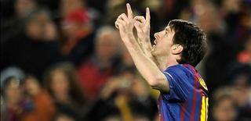El pasado. El equipo es quinto, juega bien, compite bien y saca el mayor rédito posible a su escasa capacidad goleadora. El punto por gol está por las nubes. Como las ilusiones, desmesuradas en otros tiempos cuando se pisaba zona noble y había que dosificar el uso del término Europa para no morir de nuevo por la boca. En cambio esta vez los augurios sí parecen verdad, incluso hay donde sostenerse, la metralleta de Osvaldo, la solidez defensiva, la carreras de Callejón. Sólo con que este marcara de vez en cuando, dicen en la grada cuando un tiro suyo vuelve a rozar un poste, la sexta plaza sería fácilmente blanquiazul. El estado de optimismo es tal que el club decide aprovecharlo para vender, por imperantes necesidades económicas, a Víctor Ruíz y Dídac Vilà, piezas clave de la línea defensiva. Por el primero sacan 6 millones de euros. El Nápoles demuestra unos meses después que su valor de mercado puede llegar más arriba. El Valencia paga 8 y el futbolista rebate sobre el terreno que ambos precios se han quedado cortos. Dídac cuesta 4, pero el Milan no le incluye en ningún plan, salvo en una campaña de moda que nos llega a través de los periódicos. A finales de enero la masa de aficionados del Espanyol entiende el porqué de las ventas, pero no puede esconder su descontento. Un enfado al que después darían la razón los resultados. La venta de dos defensas titulares son demasiado problema y la destrucción del flanco izquierdo comporta el adiós a la alegría. El equipo se desploma y llora las pérdidas humanas con cuatro derrotas consecutivas. Altamente nostálgico, el club encadenará otras fatales rachas de cuatro y cinco partidos sin ganar y acabar digna y tristemente en la octava posición
En verano hubo venta de género pesado, Luis García y Callejón, y el comienzo de un despido progresivo, Carlos Kameni. El equipo no lo nota e incluso mejora su estilo. No importa a qué joven del filial seleccione Mauricio Pochettino que se empeñará en demostrar su competitividad en primera división. Como Thievy, que aún limitado técnicamente y puesto en su sitio cuando le detectaron aires improcedentes, ha sumado decisivamente en varias victorias. Más que ilustres como Javi Márquez, perdido entre lesiones y rumores. El 11 tipo es Cristian, Javi López, Raúl Rodríguez, Hector Moreno, Dídac -hábil cesión-, Baena, Verdú, Romaric, Sergio García, Weiss y Álvaro. Y ha jugado 17 partidos Raúl Rodríguez, 16 Rui Fonte, 10 Cristian Gómez y 7 Cristian Alfonso. No hay ninguna estrella, el único imprescindible es Verdú y cuando ha vuelto el invierno en vez de soltarlo al Villarreal el club ha fichado a Víctor Sánchez, Philippe Coutinho y Kalu Uche. Tres refuerzos de garantías para un equipo que es quinto, juega bien, compite bien, rentabiliza los goles como ningún otro equipo y vuelve a tener las ilusiones en las nubes.
Fotografía |RCD Espanyol
Dos sueños enfrentados
Tue, 31 Jan 2012 16:12:52 +0000
Todos los arranques de pretemporada tienen un escenario común en Bilbao. Da igual que el Athletic Club venga de protagonizar una campaña anterior desastrosa. No importa si se está ante un nuevo proyecto sembrado de dudas y de inseguridades. Todo eso no importa cuando la afición rojiblanca se plantea cuáles serán los objetivos del equipo [...]

Todos los arranques de pretemporada tienen un escenario común en Bilbao. Da igual que el Athletic Club venga de protagonizar una campaña anterior desastrosa. No importa si se está ante un nuevo proyecto sembrado de dudas y de inseguridades. Todo eso no importa cuando la afición rojiblanca se plantea cuáles serán los objetivos del equipo en la temporada que comienza. Se hablará de asentar al equipo o de luchar por las plazas europeas de la clasificación liguera. Dependendiendo de cuál sea el momento deportivo concreto de la entidad, las exigencias y previsiones en Liga serán de mayor o menor enjundia. Pero cuando se afrontan las perspectivas en el torneo de Copa, ¡ay!… Para el Athletic, para la afición de San Mamés, para Bilbao, para Vizcaya y para todos los athleticzales repartidos por España y por el mundo no valen medias tintas cuando se trata de la Copa del Rey. Año sí, año también, ‘hay que ir a por la Copa’. No se concibe otro modo de entender la competición que no sea el de batallar por ella hasta el último resuello, despreciando incluso las opciones ligueras que pudiesen presentarse. Es la tradición copera, algo que ni se compra, ni se gana, ni se consigue gracias a la presencia mediática.
Cada semana, y de la mano de bwin.com, os ofreceremos los partidos más interesantes del fútbol mundial, con especial atención a todos aquellos que os manejáis en el mundo de las apuestas on-line.
Naturalmente, en muchas ocasiones, ese ‘este año hay que ir a por la Copa’ no es más que una bilbainada, una mera utopía cada año más lejana en la práctica. No son pocos los batacazos coperos de los leones en las últimas décadas. Las limitaciones actuales del Athletic Club y la distancia sideral de los equipos de la zona media-alta con respecto a los dos colosos del fútbol español no suman a favor del gran sueño bilbaíno.
Sin embargo, la hinchada es inasequible al desaliento. Y con ella, con el sueño copero de una afición que siempre viste sus mejores galas para el torneo del K.O., siempre va de la mano el equipo. Envalentonado, consciente de su responsabilidad para con el torneo más vilipendiado y maltratado de todos cuantos se disputan en España, el Athletic es capaz de superar adversidades a las que no lograría imponerse en un escenario que no fuese el de una eliminatoria copera. Es un plus intangible, un idilio permanente con el torneo, una conexión que supera en ocasiones lo deportivo y trasciende a lo espiritual, tal y como pudiera ocurrirle al Real Madrid con su ansiada Copa de Europa.
Por si fuera poco con lo espiritual, el Athletic tiene, desde hace tres temporadas, una nueva referencia en el tiempo. La Final de Valencia en el año 2009 supuso un espaldarazo a las siempre presentes ansias coperas del club. Se fracasó, bien es cierto, ante el que probablemente fuera uno de los mejores equipos de la Historia del fútbol. Pero aquella noche, entre lágrimas, se plantó, sin prisa por que germinase, una semilla de extraordinario valor. Una simiente que, con buen clima y cuidados, se espera que comience a brotar en un breve plazo de tiempo.
Pero frente a las aspiraciones rojiblancas se ha cruzado, contra todo pronóstico, el sueño imposible de un convidado inesperado. En el partido más importante y con mayor trascendencia deportiva y social de toda su larga historia, el Club Deportivo Mirandés busca, al menos, llegar a la cita de la próxima semana en San Mamés con sus opciones de clasificación para la final más o menos intactas. Lo curioso es que lo que hace tres meses podría sonar a chirigota, un equipo de Segunda B en la final de la Copa del Rey, hoy se ve como algo perfectamente plausible. No es para menos. La trayectoria del equipo de Carlos Pouso en este torneo está siendo envidiable, especialmente en Anduva, territorio hostil para los tres equipos de Primera (Villarreal, Racing y Espanyol) que lo han visitado hasta la fecha.
Las cuotas de apuestas siguen siendo reacias a la hazaña local. La victoria de los rojillos se pagaría a 4.75 euros, por 3.60 del empate y 1.72 a la victoria del Athletic Club. Una victoria rojiblanca que quizá se vea más sencilla de lo que pudiera resultar sobre el césped de la guarida mirandesa. Es el Athletic un equipo goleador (el cuarto de la Liga BBVA) pero con tendencia a conceder demasiados goles a sus rivales. En esa línea, un único gol del Mirandés se pagaría a 2.45 euros. Atentos también a las jugadas a balón parado, en las que el Athletic es consumado especialista, especialmente buscando el remate por arriba. El gol del enrachado Fernando Llorente se paga a 2.00 euros por euro apostado. Si quieren una apuesta algo más arriesgada pero notablemente mejor pagada, ojo a Fernando Amorebieta en los corners. El central es un asiduo en la búsqueda del balón aéreo en área contraria (esta temporada ya ha hecho dos goles). Su gol se pagaría a 9 euros por euro apostado. ¡Ah! y, cómo no, el de Pablo Infante, héroe del torneo, a 3.25.
Siete puntos por azar
Mon, 30 Jan 2012 16:37:43 +0000
Muy bien se podría convenir que si el Barça no cantó victoria en todos esos empates fuera de casa fue por detalles como el azar o el arbitraje Ramón Besa, cerrando filas en torno a Pep Quizá es porque el día después de que el FC Barcelona se pusiera a siete puntos del Real Madrid [...]
Muy bien se podría convenir que si el Barça no cantó victoria en todos esos empates fuera de casa fue por detalles como el azar o el arbitraje
Ramón Besa, cerrando filas en torno a Pep
Quizá es porque el día después de que el FC Barcelona se pusiera a siete puntos del Real Madrid en la clasificación liguera uno esperaba una visión un poquito más crítica hacia el aparente bajón del equipo de Guardiola. Quizá es porque, en ciertas fuentes, uno aún confía en el periodismo deportivo sin bufandeo de por medio. Porque, en el enésimo panegírico a Pep (‘a diferencia de Mourinho, Guardiola no ensuciará los partidos‘, ‘no hay más líder que Guardiola‘, ‘solo Guardiola fue capaz de levantar el ánimo tras la final de Mestalla‘), todos los males que puedan acechar al cuadro azulgrana tienen un origen y una solución aparente. Son nimiedades, en esencia. Asuntos salvables.
No hay que buscar causas en los posibles errores de planificación de una plantilla sobreexprimida que se queda corta cuando solo llevamos disputada media temporada. Tampoco en el acomodo que conlleva ser el equipo dominador de una época y ver como incluso tu eterno rival apenas puede hacer nada en el duelo directo por contener tu ímpetu. Ni siquiera en que haya equipos, Valencia y Athletic Club se me vienen a la cabeza, que supieron jugar a este grandioso Barça con la intensidad, el rigor y el acierto suficientes como para tenerlo contra las cuerdas.
No. La cosa fue del caprichoso azar, que solo parece jugar en contra, y del arbitraje. No hay más motivos. No hay causas mayores. Y si las hubiere, mejor pasar por encima de ellas. No vayan a ensuciar una puesta de sol preciosa.
David de Gea a examen
Sun, 29 Jan 2012 04:56:58 +0000
El meta danés Anders Lindegaard calentando en el lateral de Anfield, minuto 20 del partido de FA Cup entre Liverpool y Manchester United. Es una de las imágenes del fin de semana en el fútbol británico. A David de Gea le habían bloqueado Martin Kelly y Andy Carroll en el servicio de un córner -mismo [...]
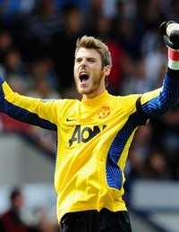El meta danés Anders Lindegaard calentando en el lateral de Anfield, minuto 20 del partido de FA Cup entre Liverpool y Manchester United. Es una de las imágenes del fin de semana en el fútbol británico. A David de Gea le habían bloqueado Martin Kelly y Andy Carroll en el servicio de un córner -mismo procedimiento que la jugada anterior-, el guardameta se dedicó a batallar con sus obstructores y Dani Agger remató a placer. El balón, deslizándose por encima de la cabeza del arquero, se coló una vez más en sus redes.
Alex Ferguson actuó rápido y mientras la realización televisiva se centraba en el nervioso rostro del español, mandó ejercitarse a Lindegaard. No queda claro si fue un impulso del técnico o si De Gea tuvo algún problema físico. Se vio una imagen del portero aquejándose del brazo, pero era en una acción posterior a la salida a la banda de Lindegaard. El cambio no se produjo -de haberlo hecho seguramente habría sentenciado a De Gea-, pero solo el gesto ya fue muy significativo. Un resultado, un culpable.
Hay un componente táctico importante en la acción. Era la segunda vez que el Liverpool conseguía rematar un córner bloqueando al portero. Podía volver a pasar en la siguiente jugada si De Gea no corregía. El partido no estaba para pruebas: Liverpool, Anfield, FA Cup, eliminatorio. La decisión final de Ferguson fue no marcar con una cruz a uno de sus futbolistas, aunque en el fondo creyera que el cambio le daría más garantías de victoria.
Anders Lindegaard, danés, 27 años. El United lo firmó hace dos temporadas procedente del Aalesunds noruego. ¿Cuándo empezó De Gea a perder la batalla bajo los postes? ¿Merece alternar oportunidades o debería ser primero y único? El amago de Ferguson sorprendió a quién conoce las capacidades de De Gea hace mucho tiempo, sabe de sus paradas en el Atlético de Madrid y de su prometedor futuro. Sin embargo, en un ejercicio de ficción, si preguntáramos a cualquier red devil que vaya los sábados al estadio, y poco más que eso, a De Gea lo ha visto más recogiendo balones que atajándolos. Seguramente nos hablaría de la pena que sintió cuando el bueno de Lindegaard volvió andando al banquillo.
Comparemos: David De Gea empezó la temporada titularísimo, uno en la espalda en la Community Shield contra el Manchester City. Un partido, un título, dos primeras cuestiones. Porque lo que le ha sucedido al guardameta esta temporada no son grandes errores o cantadas muy notorias. Generalmente son situaciones en las que un gran portero tiene que intervenir o se intuye que puede hacer alguna cosa más. Quizá no una vez, tampoco a la siguiente, pero si hay veinte disparos complicados parables y no sacas ninguno, estás cuestionado. Más bajo los postes de Old Trafford. Más si has recibido la herencia de uno de los grandes.
Cinco meses después de su debut De Gea suma los siguientes números: 20 partidos jugados (11G, 5E, 4P), 26 goles recibidos, 5 imbatido. No lo ha jugado todo. Alex Ferguson empezó a dudar en el primer choque europeo. El 14 de setiembre alineó a Lindegaard ante el Benfica (1-1). Entonces se interpretó el movimiento como una rotación puntual, pero semana a semana el danés ha ido ganando terreno. Sus números a día de hoy son los siguientes: 11 partidos jugados (9G, 1E, 1P), 7 goles recibidos, 7 veces imbatido.
La matemática tampoco lo es todo. De lo contrario, el tercero en discordia, el inglés de 21 años Ben Amos, sería el mejor posicionado: 3 partidos (2G, 1P), 2 goles en contra, 2 veces portería a 0. Hay que considerar la tipología del partido, y este factor juega a favor de David De Gea. Ha sido el madrileño quién ha jugado los partidos más importantes contra los equipos más potentes, y por lo tanto ha tenido una exposición mayor al gol. Se ha enfrentado a Chelsea, Arsenal y Manchester City en la Premier y ha disputado 4 de los 6 partidos de la Champions League. El de ayer en Anfield también es un encuentro top. En cambio Lindegaard empezó sus buenos números ante rivales como el Norwich o el Otelul Galati. Las cifras toman una lógica. El problema para De Gea es que las apariciones de Lindegaard no se quedaron ahí y pasaron de puntuales a reiterativas, y de ahí a habituales, hasta verse el español suplente en los últimos 3 partidos de Premier League.
La razón de su suplencia, aunque valoremos mucho el factor de la exposición al gol, es su rendimiento. Tiene las mejores condiciones para triunfar, pero hasta el momento no merece ser indiscutible. A continuación enlazamos algunas de sus cuestiones más populares, porque insistimos no ha cometido grandes errores. Tiene un par en su debut, Community Shield ante el Manchester United. Le para un penalti a Van Persie, pero Walcott se la cuela por debajo en el 8 a 2. Uno de los resultados que marcan la eliminación del United en Champions es el 3 a 3 en casa ante el Basilea. En el primer gol suizo, De Gea regala un balón en el punto de penalti. Culpabilidad justita, quizás una cuestión. Sin embargo, después se traduce en error cuando repite exactamente la misma acción en el partido de vuelta. Derbi de Manchester, 1 a 6 ante el City. No le echaremos la culpa del resultado, porque no la tiene, pero sí es cierto que está así así en el cuarto y mal situado en el sexto. Su último partido de titular en Premier fue ante el Blackburn Rovers. Un encuentro que seguro estudió Kenny Dalglish. Empatado el partido a 2, De Gea recibe un bloqueo de Yakubu en un saque de esquina, sale a por uvas, cae al suelo y deja el arco sin defensa para que Hanley cabecee a gol. Es la misma jugada que hoy ha usado el Liverpool para anotar el primero.
Vistas las jugadas y analizados los números, la idea drástica que tuvo Ferguson en la tarde de ayer va cobrando sentido. “Los dos goles eran evitables. No lo hemos hecho bien”- dijo el escocés tras el encuentro. A De Gea le deberían preocupar más las que hizo hace unos días Frank Mathiesen, entrenador de porteros del club: “Lindegaard se puede establecer como portero número 1 del Manchester United”.
En DDF | David de Gea: el portero tranquilo
Goal.com |Anders Lindegaard can establish as Manchester no 1